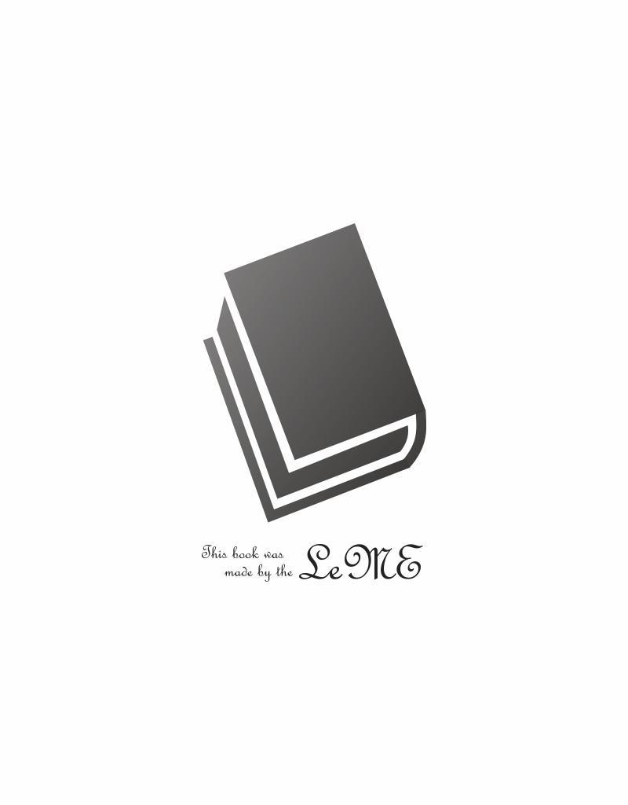

| 「坊っちゃん」ドラマ化をめぐって | |
| KATARA | |
| (2018) | |
●海
強い陽射しにギラギラ輝く。
汽船の舳先がしぶきを上げて進む。
●汽船・甲板
腕を組む主人公の坊っちゃん（23 ）が口を結んで前を見ている。海風。汽笛。
●海
進行方向に見える四国松山。
清の声「もうお別れになるかもしれません」
●汽船・甲板
前を見ながら目に涙が浮かんでいる坊っちゃん。
清の声「どうかお元気で」
●港
停泊している汽船に向かって小舟がやってくる。
明治38 年の港の全景にタイトル「坊っちゃん」
＊＊＊
「この出だしはどうかな」とＤ（ディレクター）。首をひねる。「坊っちゃんと言えば有名な書き出しでしょ。『親譲りの無鉄砲で小供の時から損ばかりしている』これがなんというかな、坊っちゃんファンにはしみついてると思うんだ。原作を忠実にドラマ化っていうならね、この出だしは外せないんじゃない？ どうです？」
「うん――」とＰ（プロデューサー）は頬杖ついてプリントアウトしたホンを見ている。
「坊っちゃんが赴任する途中の海からってのは、確かに画になるけどね。しかしどうだろう？ そもそも坊っちゃんの魅力って主人公坊っちゃんの語りにあるわけじゃない。威勢のいい江戸弁で、次から次に出てくる言葉、落語みたいな語り口、漱石先生の思いつくままの文章。それをわかってないでただ筋をなぞってもね、魅力をほとんど削っちゃってるんだから、ファンが納得するようなモノはできないんじゃない？」
「それだとじゃあ」とひろみが乗り出す。「原作の語りをふんだんに活かすとなれば、ただ映像つきの朗読になりませんか？」
「そこはライターさんの腕だよ。丸写しじゃ芸がない。うまく取捨選択してさ、再構成すればそれだけで、かなり愛読者のイメージに近いのができるんじゃない？」
「２時間に収まらないと思うけど」
「それは困るな」とＰが首を振る。
「いくら工夫しても？」とＤがひろみに聞く。
「取捨選択すればどうやっても中途半端になりませんか？ 例えばこの語りが入って、なぜあの語りはないんだとか。ファンはきっとひっかかります。だったらまったくない方がって、それで省いたんです」
「うん――」とＤは腕を組む。
「出だしの部分は私も考えました。でも思ったんです。『親譲りの無鉄砲』って言うけど、じゃあ親はどんな風に無鉄砲だったんだって。それは原作にも書かれてませんよね？ ナレーションで入れるとしたらそれも具体的に描かなきゃいけないし。なんとか捻り出して膨らましても、それはそれで原作と違ってくるわけじゃないですか。膨らましたわりに効果も少ないし。小説の第一章は坊っちゃんの自己紹介で、生い立ちと清のこと。それだけで充分じゃないですか？」
Ｄは腕を組んだまま。無言。動かない。
「38 年ていうのは、ズバリこの年？」とＰがひろみを見る。「ドンピシャこの数字？」
「そうですね」とひろみはうなずく。「後半の祝勝会が原作にははっきり書かれてないけど、日露戦争の終戦記念のはずです。終戦は明治38 年９月５日」
「なるほど」
「坊っちゃんの出版は翌39 年４月」
Ｐはウンウンうなずく。さすがにひろみはスキがない。
「ちなみに坊っちゃんがすう敷島は、37 年発売」
そこまでは余計だな。アピール過剰。
「資料があるといいね」とＰはホンにペンで書き込む。「当時の港の写真とか。あるもんかな」
＊＊＊
●港
停泊している汽船に向かって小舟がやってくる。
明治38 年の港の全景にタイトル「坊っちゃん」
坊っちゃんが汽船から勢いよく小舟に飛び乗る。汽船の船員が坊っちゃんの荷物を赤ふんどしの船頭に渡す。
続いて何人かの乗船客が乗り移る。
清の声「坊っちゃんはおかわいそうです。不幸せです」
●記憶・清の寝室
清の甥の家。北向きの三畳。風邪で寝込んでいた清が上半身を起こしている。
その横にあぐらをかいた坊っちゃん。前シーンと直結で、
坊っちゃん「そうかね？」
清「もう少し歳をとってらっしゃれば、お父様がお亡くなりの時にご自宅も相続できましたのに」
坊っちゃん「そうかな」
清「そうすれば清も、坊っちゃんと離れず済みました」
坊っちゃん「相続に歳は関係なかろう」
清「お兄様がどんどんと、何もかも片づけてしまわれて」
坊っちゃん「その金で学校も行けた」
清「お兄様から連絡は？」
坊っちゃん「ないね。九州に行ったきり」
清「亡くなられたお父様もお母様も、お兄様ばかり可愛がって」
坊っちゃん「デキが違ったからな」
清「いいえ、坊っちゃんはまっすぐでよいご気性です」
坊っちゃん「そうかい？（言われ慣れてる）」
清「きっと立派にお成りになります」
坊っちゃん「お世辞は嫌いだ」
清「それだからよいご気性でございます。心が綺麗で欲が少なくって」
坊っちゃん「もう横になった方がいい」
清「お兄様は勉強ばかりで色は真白で、あれじゃとても世の中のゴホゴホ」
坊っちゃん「ほら」
清「（横になりながら）奥様はいつおもらいになりますか？」
坊っちゃん「（苦笑し）学校を出たてだぜ？」
清「家を持つのは？」
坊っちゃん「当分ないよ」
清「お持ちになったらぜひ、清にお世話をさせて下さい。それだけを心待ちにしてるのですから」
坊っちゃん「その前に風邪を治すんだ（布団を整えてやる）」
清「はい」
坊っちゃん「俺はしあさってから、田舎に行くことになった」
清「田舎？」
坊っちゃん「数学の教師がいるんだそうだ」
清「遠くですか？」
坊っちゃん「そうだな、四国の中学だから」
清「はぁ」
坊っちゃん「月給は40 円。他に当てもないし」
清「――（悲しそうにため息をつく）」
坊っちゃん「いや、行くことは行くが、じき帰る。来年の夏休みにはきっと帰る」
清「はぁ（落ち込んでいる）」
坊っちゃん「（励まそうと明るく）何を買って来てやろう。何が欲しい？ うん？」
清「越後の笹飴を」
坊っちゃん「越後？」
清「お土産にどうか」
坊っちゃん「方向が違うよ」
清「どっちです？」
坊っちゃん「西の方だ」
清「箱根の先ですか、手前ですか。ゴホゴホ」
坊っちゃん「うん――」
清「坊っちゃん（ジッと見る）」
坊っちゃん「うん？」
清「もうお別れになるかもしれません」
坊っちゃん「――なに言ってる」
清「どうかお元気で（目に涙がいっぱい）」
●港
小舟から港にあがる坊っちゃん。ハッとして一方を見る。
日傘をさした若く美しい女性（マドンナ）が海岸通りを通過していく。
目が離せないように見送る坊っちゃん。
それを近くで見上げていた子供に気づき、
坊っちゃん「中学校はどこだ」
子供「（首をひねる）」
坊っちゃん「中学校だ」
子供「知らんがの」
坊っちゃん「（フンと鼻を鳴らし、陸揚げされた自分の荷物に手を伸ばす）」
宿屋の男「（素早く荷物を横取りし）や、お持ちします。お疲れでございましょう。どうぞどうぞ、こちら、どうぞ（と持っていく）」
●港屋
50 代の意地悪そうな（つまりマドンナとは同じ女に思えないような）女将が奥から来て膝をつく。
女将「（ガラガラ声で）いらっしゃいまし」
宿屋の男「いらっしゃいまし」
坊っちゃん「（周りを見回し連れてこられたのが宿屋と気づいてムッとし）どういうことだ」
女将「お疲れでございましょう。どうぞお上がりになって」
宿屋の男「さぁどうぞ、足を伸ばして下さいまし」
坊っちゃん「中学校はどこだ」
宿屋の男「中学校ですか？」
女将「汽車で二里ばかり行ったとこにございますが」
坊っちゃん「（男から自分の革鞄２つを取り上げ出ていく）」
あっ気にとられて見送る女将と男。
●駅・窓口
坊っちゃんが荷物を地面に置いて切符を買う。
●汽車が走る
●中学校・外観（夕方）
●中学校・窓口
若い用務員が応対している。
用務員「皆さん帰られましたがな、もし」
坊っちゃん「宿直の先生は」
用務員「ちょっと用とかで出かけとって」
坊っちゃん「用？」
用務員「すぐ戻ると言うてましたが」
坊っちゃん「ふーん」
用務員「どなたに用ですかな」
●校門前
人力車を待たせてある。
坊っちゃん「（来て）宿屋へ連れていけ（と乗り込む。荷物は乗せたままになっている）」
車夫、人力車を動かす。
●山城屋・一室
女中「（戸をあけ）どうぞこちらへ」
坊っちゃん「（入ってきて部屋に失望し）暗いな。暑い」
女中「（続いて入り）本当にまぁ、いつまでもいつまでも」
坊っちゃん「こんな部屋は嫌だ。他にもあるだろう」
女中「ヘヘヘ、今日はあいにくねぇ（荷物を隅に置く）」
坊っちゃん「今日は？」
女中「ほんではごゆっくり、湯はもう入れますから（と答えないまま忙しく出ていってしまう）」
坊っちゃん「おい」
●山城屋・廊下
浴衣に着替えた坊っちゃんが通りすがりに空き部屋に気づく。引き返して覗く。
●別の廊下
また通りすがりに誰もいない広間に気づく。
●浴場
不機嫌な顔で湯につかっている坊っちゃん。
●山城屋・一室（夜）
女中の給仕で坊っちゃんが黙々と夕飯を食べている。
女中「お客様はどちらからおいでですか？」
坊っちゃん「東京だ」
女中「へぇ、東京はよい所でございましょう」
坊っちゃん「当たり前だ」
女中「（ポカンとして見る）」
●山城屋・厨房
女中「（口真似で）当たり前だ（と仲間たちに言う）」
大笑いする女中たち。
女将「（入ってきて）ほらほら、動かすのは手と足（と忙しそう）」
●山城屋・廊下
坊っちゃんがさっき覗いた部屋に女中が戸をあけて入る。
数人の男たちが来ている。酒席。配膳する女中。
●別の廊下
やはりさっき坊っちゃんが覗いた広間で盛大な宴会。だいぶ座が乱れている。
●山城屋・一室
喧騒と暑さで眠れない坊っちゃんが蚊帳の中で布団に転がり、忙しく扇子で胸元をはたいている。
清の声「奥様はいつおもらいになりますか？」
●回想・マドンナ
優雅な微笑で通りすぎていく。スローモーション。
白い画面にＦ．Ｏ．していき、
●山城屋・一室
まぶしい朝の陽射しに顔をしかめる坊っちゃん。
女中「（雨戸をあけている）おはようございます。よう眠れましたかなもし」
坊っちゃん「うーん（と毛布を抱え込む。まだ眠い）」
女中「（ニヤニヤ笑う）」
＊＊＊
「このあたりは必要かな？」とＰ。「どう思う？」と私に振る。
「このあたりっていうのは？」
「港屋から中学校、山城屋に来ての一連。視聴者がダレないかね？」
「でもどれも、原作にある場面ですよね？ 学校を訪ねて宿直がいないってのも、のちのちかかってくるし」
「じゃあ山城屋の部分は？ こんなに細かくいる？」
「ええ――」ＡＰ（アシスタントプロデューサー）の私から何か言わせたいらしい。ひろみを脚色に推薦したのは私だ。
「女中の態度とか仕事ぶりとか、裏の様子なんて欲しいかな」
「どお？」ひろみに聞こう。きっと答えを用意してる。
「原作の坊っちゃん目線だと」とひろみが私を見る。「ただ宿屋の人が失礼だったり、気が利かなかったりでしょ」
「そうね」
「でも宿屋は宿屋で満室だったり、忙しかったりの事情あるわけじゃない？」
「うん」
「それも公平に書かないと片手落ちだと思うの。坊っちゃんてかなり自分中心、マイペースの人ですよね？」とＰに向かって言う。「来たばかりでそんな態度じゃ、噂されたり評判落としたりも当然なのに、そういうことにも無頓着」
「まぁね」とＰ。
「小説みたいに坊っちゃんの主観で、全然そういうのに気づかないのも面白いですけど。でもドラマでやるとしたら、俯瞰客観で見せる方がいいんじゃって」
「こんなに自分中心じゃ言われてもしょうがないってこと？」とＤ。「そう印象づける狙い？」
「そうですね、まぁ」とひろみはうなずく。
「それじゃ視聴者は坊っちゃんの味方になれないよね？ 言動にうなずけない」
「うなずかせる必要あります？」
「感情移入してもらえなきゃ視聴者はついてこないでしょ」
「でもこれだけ変わった人なんです。感情移入なんてしろって方が無理ですよ。こういう変わった人がどうなるか、ひどい目に遭うんじゃないか、そういう予感とかサスペンスでつかむのもアリじゃないですか？」
「そうかねぇ」とＤは納得いかないらしい。
「それを抜きにしても、遠い土地に赴任してきてどうなるか、マドンナともどうにかなるのか、それで充分ヒキになると思いますけど。ダレませんよ」
「そうかねぇ」とＰが同じ口調で言う。
＊＊＊
●山城屋・一室（時間経過）
ムシャムシャと朝食をとる坊っちゃん。前シーンの女中が目をそらしながらもニヤニヤしているのに気づき、更にムッとする。
食事を中断して札入れから５円札を出し、ぶっきらぼうにつき出す。
女中「はぁ？」
坊っちゃん「あとでこれを帳場へ持って行け」
●山城屋・外観
昨日の服装で坊っちゃんが出てくる。手ぶら。一方へ。
●町
中学校の制服を着た生徒たちが走っていく。坊っちゃんを追い越していく。坊っちゃんより大きいのもいる。
●中学校・校門
遅刻寸前の生徒たちが急いで入っていく。坊っちゃんはゆっくり歩いて入っていく。
●校長室
狸「（机の中から辞令を出し）これですな、これ、他の職員に挨拶する時は、この辞令を見せて願いますよ（恭しく渡す）」
坊っちゃん「（受け取って見ながら）はぁ」
狸「もう授業が始まってるんでね、むこうにそろうのは一時間目のあとになる。まぁどうぞ、お掛けなさい」
坊っちゃん「ええ（狸とほぼ同時に座る）」
狸「だいぶ時間があるから（懐中時計を出して見て）そうですな、だいたいのことを飲み込んでおいてもらいましょう。まずは教員の心がけとしてぇ」
●校内の授業風景いくつか
●校長室
狸「（気持ちよく演説している）生徒の模範にならなければならない。一校の師表と仰がれなくてはならない。学問だけのことではなく徳化を及ぼさなくては、真の教育者と呼べないのです。未熟な生徒たちをおおらかに見守ること。感情的にならないこと」
坊っちゃん「（深刻な顔で聞いている）」
●回想・港屋
狸の声「（直結で）何より忍耐、我慢ですな」
坊っちゃんが宿屋の男から自分の荷物を取り上げ出ていく。
狸の声「そういう小さなことの積み重ねです」
●回想・山城屋
坊っちゃんが女中に５円札をつき出し「持って行け」と言っている。その声はなく、
狸の声「信頼とはそういうものだ」
●校長室
狸「まぁとにかく、これから精出して勉強してくれたまえ」
坊っちゃん「（泳いでいた目を上げ）いや、到底おっしゃるように、自分はできません」
狸「は？」
坊っちゃん「帰ります。宿屋へ５円やっちまったから、東京までは帰れませんが」
狸「何を――」
坊っちゃん「嘘をつくよりマシです。この辞令は返します（とテーブルに置き）失礼します（立ち上がる）」
狸「いやちょっと、お待ちなさい。今のはただの、希望です」
坊っちゃん「は？」
狸「あなたが希望通りできないのは、よく知っている。心配しなくってもいい（と笑う）」
坊っちゃん「（笑顔なく）はぁ」
授業終了のラッパが鳴る。
●校内・廊下
教室から生徒たちが出てくる。
●職員室・モンタージュ
赤シャツ「（席を立って）ほぉ、これはこれは、昨日お越しで？ そりゃご苦労ですな。よろしく（愛想のいい笑顔）」
辞令を見せている坊っちゃん。
それを受け取ってメガネを上げ、じっくり見る老教師。恭しく返却。
辞令を見せている坊っちゃん。
野だ「お国は東京だそうですね？ いや嬉しい、お仲間ができて。私もこれで江戸っ子です」
辞令を見せている坊っちゃん。
うらなり「古賀と申します。よろしくお願いいたします（丁寧にお辞儀）」
辞令を見せている坊っちゃん。
山嵐「やぁ君が新任の人か。ちと遊びに来たまえ。アハハハ。（鳴りだした始業ラッパの方を向き）授業はあさってから頼むよ。で、どこに泊まってる？ 今に行って相談しよう（と教科書を持って席を立つ）」
●中学校・外観
坊っちゃんが校門を出てくる。
●町
坊っちゃんが散策している。
県庁。兵営。大通り。
坊っちゃんがハッとして立ち止まる。
正面からマドンナが歩いてくる。昨日と別のハイカラな服装。
見ている坊っちゃん。
その視線に気づいてマドンナが見る。目が合う。見知らぬ人のため目を伏せ一礼し通りすぎる。
気になるが振り向かず、歩きだす坊っちゃん。
＊＊＊
「しかし昨日の今日でしょ」とＤは苦笑い。「また町中でバッタリってのは、どうなの？」とひろみを見る。「理由もなく現われすぎは不自然じゃない？」
「そうですか？」とひろみ。
「狙いはわかるけどね。これからマドンナと何かありそうな、そんな気にさせる」
「視聴者をですか？」
「見え透いてるんじゃない？」
「視聴者だけじゃなく坊っちゃん自身そんな気になりますよね？ 昨日の今日で会えば。それも書いときたかったんです」
「でも偶然の再会なんて、そうそうないんだ。今の視聴者は目が肥えてるからね。いかにもだと笑われるよ」
「でも狭い町の設定じゃないですか、この舞台。そこでマドンナは評判の別嬪さんですよね？ それもあとから説明するんだし。不自然じゃないと思いますけど」
「あとで説明するまでさ」とＤが私を見る。「都合いいような印象持たすよね？」
「でもストーリーって、結局偶然をどういう順番で仕組むかでしょ」とひろみ。「盛り上げるため最悪のタイミングを重ねたり」
「それは話が違うよ」とＤはまた苦笑い。
「都合の悪い偶然ならインパクトで先の展開が気になって、偶然てことにも気づかせない。批判もされないけど、でも偶然を重ねてるには違いないですよ」
Ｄは目をそらす。無言。
Ｐも黙っている。私が何か言うしかない。
「最初のＣＭ前だから、これはこれじゃないですかね？」
「うん――」とＰは生返事。
＊＊＊
●山城屋
帳場に座っていた女将がハッとして立ち上がり、板の間に正座して頭をつける。
女将「おかえりなさいませ」
坊っちゃん「おう」
女将「昨日は失礼いたしました。お座敷があきましたので、どうぞこちら（きびきびと立つ）」
●広間
15 畳。床の間つき。坊っちゃんが浴衣で大の字に寝ている。天井を見ている。
●回想・清の寝室
悲しそうにため息をつく清。
坊っちゃんの声「昨日着いた。つまらん所だ」
●広間
隅のちゃぶ台に書きかけの手紙。
坊っちゃんの声「15 畳の座敷に寝ている」
坊っちゃんは畳の上に転がったまま。ウトウトしている。
坊っちゃんの声「宿屋へ茶代を５円やった。カミサンが板の間へ頭をすりつけた。夕べは寝られなかった。来年の夏は帰る。今日学校へ行ってみんなにあだなをつけてやった。校長は狸、教頭は赤シャツ、画学は野だいこ、英語の教師はうらなり、数学は山嵐（それぞれの職員室での映像が入り）今にいろんなことを書いてやる。さようなら」
いびきをかいて眠る坊っちゃん。
山嵐の声「この部屋かい」
大声にビクッと目を覚ます。
山嵐「（戸をあけてどんどん入ってきて）おお、いい座敷だな。これはいい。さっきはせわしく失敬したね（起きる坊っちゃんのそばに座り）早速だが君の受け持ち、授業について話そう。主任の僕と分け合って担当してもらう。君が来るまでは手が回らなくてね、来るのを待ってた。どうした？」
坊っちゃん「あぁ、いや（いきなりの話で頭に入らず、よく目を覚まそうと頭を振っている）」
山嵐「旅の疲れがとれんか？ 東京は遠いからな。しかし君、いつまでもこんなところにいるつもりじゃあるまい？ 僕がいい下宿を周旋してやろう。他の者では承知しないが、僕が話せばすぐできる。早い方がいいな。今日見て明日移って、あさってから学校へ行けばいい。どうだい」
坊っちゃん「ええ、まぁ、そこんとこは」
山嵐「じゃあ一緒に来たまえ（と立ち上がり）授業のことは道々話そう。暑いなしかし、いつまでも。氷水でも食おうじゃないか。さぁ着替えるんだ。さぁ」
●中学校・廊下（後日）
坊っちゃんを従えて山嵐が来る。
山嵐「そこだ（と教室の一室を指さし）緊張するか。ハハハ。まぁがんばって来たまえ（笑顔で言って別の一方へ）」
坊っちゃん「（深呼吸して向かう）」
●教室
入ってくる坊っちゃんに生徒の「起立！」の声。
一瞬ドキッとし、それから生徒たちをねめ回して教壇に立つ。
「礼」の声で一斉に頭を下げる生徒たち。「着席」
なめられまいと笑顔なく、自分に弾みをつけるように「うん」と言って、坊っちゃんが授業を始める。教科書をえらい早口で読み上げる。
挨拶もなく始められたことにポカンとする生徒たち。急いで教科書をめくりだす。
ペースに追いつこうとあわてる生徒たちに、坊っちゃんはますます調子に乗って早口になる。
顔を見合わす生徒２人。
坊っちゃんのべらんめえ調に別の生徒３人も顔を見合わす。
生徒Ａ「先生！（太い声で立ち上がる。坊っちゃんより大きい）」
坊っちゃん「ん？ なんだ」
生徒Ａ「あまり早くてわからんけれ、もちっとゆるゆるやっておくれんかな、もし」
坊っちゃん「おくれんかな？」
生徒Ａ「もし」
坊っちゃん「（フンといった感じで）早すぎるならゆっくり言ってやるがな、『おくれんかな』たなんだ（失敬な、と思う）」
言われた意味がわからずポカンとする生徒たち。
坊っちゃん「俺は江戸っ子だから君らの言葉は使えない。わからなければわかるまで待つがいい（また教科書を読みだす）」
●中学校・外観
授業終了のラッパが鳴る。
●教室
板書していた坊っちゃん、ラッパに早々と切り上げ、
坊っちゃん「よし、今日はこれまでだ」
生徒Ｂ「その問題の答えは、どうなるんぞなもし」
坊っちゃん「今度だ。ほら、終わりだ」
「起立」の声がかかり、「礼」のあと坊っちゃんはさっさと教壇を降りて出ていこうとする。
生徒Ｃ「先生」
坊っちゃん「なんだ」
生徒Ｃ「ちょっとこの問題を（教科書を持って近づき）解釈しておくれんかな、もし」
坊っちゃん「うん？（と見る）」
生徒Ｃ「今日の授業だと、この場合どうなるんぞなもし」
坊っちゃん「（顔をしかめ）なんだかよくわからない。この次教えてやる（と急いで出ていく）」
生徒たちの大笑い。「できんできん」と囃したてる。
廊下でムッと振り返る坊っちゃん、しかし戻らず行ってしまう。
●職員室
山嵐の座る席。その隣りに不機嫌な坊っちゃんが来て座る。
山嵐「おお、ご苦労さん。どうだったね、最初の授業は。うまくいったかい」
坊っちゃん「うん――」
山嵐「そうか。たいしたもんだ。はじめはなんかしらしくじるんだがな。そうかそうか」
同僚職員の声「堀田さん」
山嵐「はい（と見る）」
坊っちゃん「この学校の生徒は分からず屋だな」
山嵐「ん？ 分からず屋って？」
同僚職員の声「堀田さんちょっと」
山嵐「あぁ、はいはい（と立っていく）」
坊っちゃん「――」
●下宿
主人のいか銀が坊っちゃんの部屋で風呂敷に包んだ10 個ほどの印材を広げる。
いか銀「印材です」
坊っちゃん「印材？」
いか銀「手前は書画骨董が好きで、とうとうこんな商売をうちうちで始めるようになりました。あなたも大分ご風流でいらっしゃるらしい」
坊っちゃん「ご風流？」
いか銀「どうです。みんなで３円。３円なら安い物でしょう」
坊っちゃん「そんな金はないよ」
いか銀「まぁそう言わずに、お茶でもどうぞ」
坊っちゃん「どうぞって俺の茶だ」
いか銀「この色と艶、いいでしょう？」
坊っちゃん「もっと苦くないのを買ってくれ（湯呑を覗く）」
いか銀「なぁに金なんかは、いつでもようございます」
坊っちゃん「これじゃ胃にこたえる」
いか銀「お買いなさいな。どうぞさぁ、よくご覧なさい」
坊っちゃん「金があっても買わないんだ。しまってくれ」
●住田温泉
坊っちゃんが大きな湯船につかっている。頭の上に赤手拭い。
●蕎麦屋
坊っちゃんが店内に入ってくる。「いらっしゃいまし」と女の声。
坊っちゃん「（座敷に上がりながらお品書きの短冊を見上げ）天麩羅をくれ」
「はーい」と女の声。
坊っちゃんが汚い店内を見回し奥で食べている生徒４人に気づく。生徒たちが先に見ていて「こんちは」と言う。
坊っちゃん「おう、こんちは（また店内を見回す）」
●中学校・廊下（翌日・朝）
坊っちゃんが歩いてくる。
●教室
坊っちゃんが入ってくると生徒たちが大爆笑。黒板いっぱいに「天麩羅先生」と書いてある。
それを見る坊っちゃん。「起立」の声。
坊っちゃん「（バカバカしそうに）天麩羅を食っちゃおかしいか（と教壇に立つ）」
級長の「礼」の声。「着席」
生徒が椅子に座る雑音のなか坊っちゃんは黒板を消しにかかる。その背中に１人の生徒の声「しかし４杯は過ぎるぞな、もし」
坊っちゃん「（ギロンと振り向き）４杯食おうと５杯食おうと、俺の銭で俺が食うのに文句あるか（黒板消しを途中にし、イライラと教科書をひらいて読みだす）」
●中学校・廊下（時間経過）
坊っちゃんが歩いてくる。
●教室
坊っちゃんが入ってくるとまた生徒たちが大爆笑。黒板に今度は「一つ天麩羅四杯なり。但し笑うべからず。」と書いてある。
坊っちゃん「（笑う生徒たちをねめ回しながら黒板に行き）誰が書いた（文字を消しにかかり）こんなイタズラが面白いか」
生徒たちのクスクス笑い。
坊っちゃん「誰が書いた（と振り返る。生徒たちは静かになるが名乗り出る者はなく）君らは卑怯という意味を知ってるか（また黒板を消す。その背中に）」
生徒の声「自分のしたことを笑われて、怒るのが卑怯じゃろう」
数人の生徒たちの笑い声。
坊っちゃん「（振り向いてため息をつき）余計な減らず口を利かないで勉強しろ（と教科書をひらく）」
●中学校・廊下（時間経過）
再び坊っちゃんが歩いてくる。
●教室
坊っちゃんが入ってくると生徒たちがクスクス笑う。黒板には「天麩羅を食うと減らず口が利きたくなるものなり」と書いてある。
坊っちゃん「（教壇に行かず生徒たちを睨み）なんだこれは」
静まる教室。目を伏せている生徒たち。
坊っちゃん「そんな生意気なヤツは教えない（と教室を出ていく）」
●下宿
いか銀がまた押し売りしている。掛軸を床の間に下げて講釈している。
いか銀「どうです？ いい出来じゃありませんか。これは崋山です。田原藩藩士、のちに家老となった全楽堂、寓画堂の崋山」
坊っちゃんは興味なさそうに敷島をすっている。
●住田温泉
他に入浴客のない大きな湯船で坊っちゃんが泳いでいる。
●団子屋（夕方）
赤手拭いを下げた坊っちゃんが店に入っていく。
●中学校・教室（朝）
坊っちゃんが入ってきてギョッとする。
黒板に「団子二皿七銭」
生徒たちの笑い声。
●廊下
坊っちゃんが覚悟の表情で来る。教室に入る。
●教室
黒板に「遊廓の団子旨い旨い」
生徒たちの笑い声。
●住田温泉
大きな札に黒々とした文字で「湯の中で泳ぐべからず」
坊っちゃんがふくれて湯船につかり、ブクブクやっている。
●中学校・教室
黒板に「湯の中で泳ぐべからず」
生徒たちの笑い声。
●下宿
いか銀「これは端渓です。端渓。今時珍しい中層です。この眼をご覧なさい（と大きな硯を突きつける）眼が３つあるのは珍しい。溌墨の具合も至極よろしい。試してご覧なさい」
坊っちゃん「（ウンザリして聞いてない。敷島をやたら吹かす）」
＊＊＊
「こういうのが伝わりますかね？」とＤ。「短い場面だけ重ねるってのは、ちょっと難しんじゃないかな」とＰに言う。
「そうだねぇ」とＰ。
「映画なら別だけどね。映画は見る気満々の観客が、わざわざ映画館に出向いてる。テレビとは観賞態度、集中力が違う。それ相手ならモンタージュも有効だけど、でもテレビはもっとお気楽な見方をされるんだ。ろくに画面を見てなかったりする。メシを食いながら、雑誌をめくりながら、洗濯物をたたみながら見てるかもしれない。視聴者の集中力をあてにできない。演出家としちゃつらいとこだけどね。映像より音、音声、会話だけでわかるようにしないと、視聴者はついてこないんじゃない？」
「じゃあどうすればいいんです？」とひろみ。「どんな方法あります？」
「だからやっぱりね、坊っちゃんの語り、ナレーションが要るんじゃない？」
「宿直のシーンにもですか？」とひろみは目を伏せる。「あそこはほとんど動きだけの場面だけど。ナレーションなんて入れたら台無しになりませんか」
「あそこはまぁ別としてね」とＤ。
「坊っちゃんて基本毒舌じゃないですか。田舎のことも他人のこともバカにするし言いたい放題でしょ？ それをそのまま流したら抗議殺到するんじゃないですか？」
「それは困るな」とＰ。「入れるならもっとソフトにしてもらわないと」
「でも原作にあるんだからね」とＤ。「それに忠実って言えば批判はかわせるんじゃない？」
「原作を読んでない視聴者はどうです？」とひろみ。「不快に思いませんか？」
「文句を言う方がおかしいよ」とＤが首を振る。「勉強不足なんだ」
「それは変です。あらかじめ原作を読んでるのが前提って、それじゃ作品として独立してませんよね？」
「こんな有名な本読んでない人いる？」
「それでも見る人の予備知識に頼るのは間違いだと思います。求めるのは」
「でも原作ありきの企画でしょ。そうじゃない？」
ひろみは黙る。ムカついてるんだろう。長いつき合いだから顔でわかる。
「まぁそこのとこはさ」とＰは軽い口調。「とりあえずペンディングで。ね？」と私を見る。
「ええ」ひろみには悪いけど「そうですね」と返事するしかない。
＊＊＊
●中学校・廊下
休み時間で生徒たちがしゃべっている。その中を授業を終えた坊っちゃんが歩いてくる。正面から来た狸がすれ違いに声をかける。
狸「あぁ、今夜ははじめての宿直ですね」
坊っちゃん「ええ」
狸「ご苦労さま。宿直部屋はわかりますか。教場の裏手にある寄宿舎の１階、西のはずれの一室で（と指さして説明する声が小さくなり）」
山嵐の声「そりゃ校長と教頭は別さ」
●職員室
赤シャツが自分の机で帝国文学を読んでいる。
山嵐の声「（直結で）奏任待遇だからな。宿直はない」
坊っちゃんと山嵐がそれぞれの席に座り話している。
坊っちゃん「フン、勝手な規則だ」
山嵐「勝手か」
坊っちゃん「こうやって待たすのもさ。毎日用もなく３時までいろってのは愚だぜ」
山嵐「まぁな。意味なんかない。勝手に規則をこしらえて守らせる」
坊っちゃん「おもしろくもない」
山嵐「強者の権利だ。１人で不平を並べたって通るもんじゃない」
坊っちゃん「マトモなことなら１人だって２人だって通りそうなもんだがな」
山嵐「ハハハ」
●寄宿舎・宿直部屋
坊っちゃんが畳に転がっている。鼻毛を抜いている。
山嵐の声「（前シーンから直結で）しかし君、あんまり学校の不満を言うもんじゃないぜ。言うなら僕だけにしろ。ずいぶん妙な人もいるからな」
あくびをする。退屈。寝たまま伸びをする。
●中学校・校門
はき掃除をしている若い用務員が一方を見る。坊っちゃんが歩いてくる。
用務員「どちらへ？」
坊っちゃん「（止まらずに）ちょっと出てくる」
用務員「ご用ですか」
坊っちゃん「用じゃない、温泉だ」
用務員「（あっ気にとられて見送る）」
●住田温泉
坊っちゃんが湯につかりくつろいでる。
●町（夕方）
中学校のある町。湯上がりの坊っちゃんが歩いてくる。
正面から来る狸が坊っちゃんに気づいて立ち止まる。
坊っちゃん「どうも」
狸「あなたは今日は、宿直でなかったですかね」
坊っちゃん「ええ宿直です（立ち止まる）」
狸「ですよねぇ」
坊っちゃん「宿直ですから、これから帰って泊ることは泊ります。失礼（と歩いていく）」
狸「――（振り返って見送る）」
●町角
坊っちゃんと山嵐が出くわす。
山嵐「おい、君は宿直じゃないか」
坊っちゃん「うん、宿直だ」
山嵐「宿直がむやみに出歩くなんて不都合じゃないか」
坊っちゃん「出歩かない方が不都合さ。やることもない」
山嵐「君のズボラにも困るな。校長か教頭に会うと面倒だぜ」
坊っちゃん「校長には今会った。暑い時には散歩でもしないと宿直も骨でしょうと言ってたよ（さっさと歩いていく）」
山嵐「――（振り返って見送る）」
●寄宿舎・外観（夜）
虫の声と蛙の声がわずかに聞こえる。
●寄宿舎・宿直部屋
蚊帳の中で坊っちゃんが寝ている。
急にギクリと目をあけ、「ワッ」と体を起こす。
毛布をめくった敷布団の上に無数のイナゴがいる。それを蹴飛ばす坊っちゃんの足。
枕を叩きつけたり蚊帳の中で七転八倒する。「おい！ おい！ 誰か来い！」
●寄宿舎・廊下（時間経過）
若い用務員「（ランプを持って来て）どうかされましたか」
戸があいて坊っちゃんがつかみかかり、部屋にひっぱり込む。
●宿直部屋
若い用務員「なんですか」
坊っちゃん「なんですかもあるもんか（寝床を指さし）床のなかにバッタを飼うヤツがどこにいる。間抜けめ」
若い用務員「（つぶれた無数のイナゴの死骸を見回し、驚き後ずさりして）存じません」
坊っちゃん「存じませんで済むか（まだ生きてるイナゴが顔に飛びつく。払いのける）」
若い用務員「私は存じません」
坊っちゃん「いいから掃き出せ。生徒を呼んで来い」
●宿直部屋（時間経過）
寄宿生の代表６人、坊っちゃんの前に正座している。
坊っちゃん「なんでバッタなんか俺の床に入れた」
生徒Ｄ「バッタてなんぞな」
坊っちゃん「バッタを知らないのか？ 知らなけりゃ見せて（と見回すが掃き出してしまって見当たらない）おい（と表の用務員に向かって）バッタをよこせ」
若い用務員「へえ（ちりとりに掃き入れ、そのまま寄こし）あいにくこれしか見当たりません」
坊っちゃん「おお（１匹をつまむ）」
若い用務員「明るくなればもっと拾ってまいります」
坊っちゃん「（用務員に呆れるが、今はいいと生徒に向かい）バッタたこれだ。大きいナリしてバッタも知らないた何事だ」
生徒Ｆ「そりゃイナゴぞな、もし」
坊っちゃん「イナゴ？（つまんだそれを見直すが）べらぼうめ。イナゴもバッタも同じもんだ。だいたい先生を捕まえて『なもし』たなんだ。菜飯は田楽の時以外食うもんじゃない」
生徒Ｇ「なもしと菜飯とは違うぞな、もし」
坊っちゃん「イナゴでもバッタでもなんで俺の床の中に入れた。誰がバッタを入れてくれと頼んだ」
生徒Ｈ「誰も入れやせんがな」
坊っちゃん「入れないものがどうしていた」
生徒Ｉ「イナゴはあったかいとこが好きじゃけれ、大方勝手にお入りになったんじゃあろ」
坊っちゃん「バカ言え。勝手にお入りになられてたまるか。なぜこんなイタズラをしたか言え」
生徒Ｄ「言えて言われても、入れんものは説明しようがないがな」
坊っちゃん「（忌々しく見回す）イタズラしといて罰は御免て了見か。卑怯なもんだ。ウソをついて誤魔化して。いったいなにしに学校へ入った」
生徒たち「――」
坊っちゃん「まぁいい。そんなに言いたくなきゃもう聞くもんか。さっさと行け。寝ちまえ」
●寄宿舎・外観
坊っちゃんのいる宿直部屋の明かりが消える。
●宿直部屋
蚊帳の中で坊っちゃんがウトウトしている。
突然天井から大勢が足を踏み鳴らす音。
驚いて跳ね起きる坊っちゃん。天井を見上げ、ハハンとわかって勢いよく立つ。
●寄宿舎・廊下
坊っちゃん「（宿直部屋から出てきて）うるさい！ 静かにしろ！ なにやってる！」
踏み鳴らす音が続いているなか、階段に向かって走る。
●寄宿舎・２階廊下
階段から躍り上がる坊っちゃん。途端に物音ひとつない。
暗い廊下を見渡し、あれ？ と首をひねる。静寂。
寝ぼけたか？ と階段に引き返そうとした時、
生徒たちの大声が「１、２、３」
坊っちゃん「（廊下の奥を振り返る）」
「ワーッ」という声を合図にまた床を踏み鳴らす音。
坊っちゃん「静かにしろ！ 夜中だぞ！（と走りだす）」
しかしすぐ廊下に転がり、すねを押さえてうずくまる。
坊っちゃんの足を引っかけた木刀が一室の戸の隙間に素早く入る。
足を押さえながら坊っちゃんが振り向いた時はもう何もない。
気が急いて立ち上がり、片足飛びで奥へ行く。
しかし踏み鳴らす音はもう消えて、再び静寂。
坊っちゃん「おい！（と聞こえたはずの部屋の戸をあけようとするがあかない）あけろ！（向かいの部屋も試すがあかない）クソ」
逆の奥から再び「１、２、３、ワーッ」
痛めた足を引きずりながら坊っちゃん走る。しかし到着するとまた静寂。
しらみ潰しに戸をあけようとするがどこもあかない。
どうしていいかわからず腰を落とす。荒い息で廊下を見回し、プーンと寄ってくる蚊を手で払う。
●夜明けの空
●寄宿舎・２階廊下
坊っちゃんがあぐらで腕を組んだまま眠っている。すねが大きく腫れている。
目を覚まし、そばの気配に気づく。
坊っちゃんを覗きこんでいた生徒２人、驚いて部屋に戻ろうとする。
坊っちゃんは素早く１人の片足をつかみひっぱり上げる。
背中からひっくり返る生徒。
坊っちゃん「この！（足を引きずって立ち上がり、もう１人につかみかかってポカリポカリと殴る）」
目を白黒させる生徒。
坊っちゃん「来い！ そっちのおまえも来い！（と２人を引っ立て）昨日の代表も全員来い！」
●宿直部屋
昨日の代表を含む生徒10 人が坊っちゃんの前で正座している。入り切らない生徒たち（40 人くらい）は廊下に溢れている。
坊っちゃん「（蚊に刺されて腫れた顔で）正直に言え」
生徒Ｉ「知らんがな」
坊っちゃん「バッタもか。あの夜中の騒ぎもか」
黙っている生徒たち。ねめ回す坊っちゃん。
廊下でざわめき、人を通すような動きがあって、
狸「（若い用務員に先導され宿直部屋を覗き）どうしました」
●中学校・校門
寄宿生以外の生徒たちが登校している。
●寄宿舎・宿直部屋
狸が坊っちゃんと生徒たちのあいだに座っている。
狸「それぞれの話はわかりました。とにかくまぁ、今日のところはこんな時間です。生徒たちは急がないと授業に遅れる。顔を洗って朝食をとりなさい」
坊っちゃん「放免ですか」
狸「ひとまず私に預けて下さい。追って処分するまでは、とりあえずいつも通りでいいでしょう。ほら早く（と生徒たちをせっつく。それから坊っちゃんに）あなたもさぞお疲れでしょう。今日は授業に及ばないから、このまま帰宅されるといい」
坊っちゃん「いいえ、ちっとも疲れちゃいません。一晩ぐらい寝なくたって授業はやります。できないなら月給を学校に割り戻します」
狸「しかし大分、顔が腫れてますよ」
坊っちゃん「（さすったあとボリボリかき）いくら膨れたって口は利けます。授業には差し支えません」
狸「フフ、なかなか元気ですね、フフ」
＊＊＊
「イナゴについてはちょっと描写が足りないかもね」とＤ。「生徒がやったかどうか、これじゃハッキリわからない」
「そうですか？」とひろみ。
「寝てる坊っちゃんの部屋に生徒が忍び込むとか、その前に廊下を忍んで来るとか、そういうカットを入れないと明確じゃないでしょ」
「それに続く騒ぎで、生徒の仕業っていうのは明白じゃないですか？」
「あらぬ嫌疑をかけられて応酬したとも取れる」
「そうですか？」
「もっとわかりやすくした方がいい」
「でもこの前に、さんざん生徒はイタズラしてますよね？ これ以上わかりやすくする必要あります？」
「だけどそもそもね、生徒はなんでイタズラしたの。その理由が明確じゃないでしょ」
「坊っちゃんをなめてたからじゃないですか。坊っちゃんのぶっきらぼうな態度で、からかってみたくなったんです。それは初授業からの一連で書きましたよね？」
「それだけで見る人に伝わる？」
「伝わりませんか？」
「もっとしっかりした理由がないと、納得できないんじゃない？」
「じゃあ赤シャツにも理由を作りますか？ ずるく立ち回る理由。納得させるためにあれこれ追加したら、原作と違ってきますよ。勧善懲悪でもなくなる。いいんですか？」
Ｄは無言。ひろみが怒るのもわかる。Ｄは思いつきをすぐ口にする。でもひろみの言葉もキツイ。
「勧善懲悪にならなくてもいいですけど」とひろみ。「でもフォローできない、懲らしめるしかない人っていますよ。メチャクチャだったりわけわかんなかったり。それにわかりやすくするだけが表現じゃないですよね。他人はわからない。わかりにくいことの表現なら、それはそれで成立するんじゃないですか？」
＊＊＊
●中学校・職員室
ガランとしてる。授業がない坊っちゃん。その席に赤シャツが来る。横の机（山嵐の席）に手をついて、
赤シャツ「君釣りに行きませんか」
坊っちゃん「釣りですか」
赤シャツ「今日これから。お忙しいかな」
坊っちゃん「（気が乗らず）そうですなぁ」
赤シャツ「釣りをしたことはありますか」
坊っちゃん「そりゃあります。子供の時には釣堀でフナを３匹釣って」
赤シャツ「ホホホホ」
坊っちゃん「神楽坂の毘沙門の縁日じゃ８寸ばかりのコイを取り逃がして、これは今考えても惜しい」
赤シャツ「それじゃ本当の釣りの味は、まだわかりませんね」
坊っちゃん「そうですか（不機嫌になる）」
赤シャツ「お望みなら伝授しましょう。どうです」
坊っちゃん「うーん」
赤シャツ「早速伝授しましょう。吉川君と２人じゃ寂しいから、一緒に来たまえ。それとも海は、舟は弱いですか」
坊っちゃん「（ムッとして）行きましょう」
●海
船頭が漕ぐ釣舟が港から沖に出ていく。赤シャツ、野だ、坊っちゃんが乗っている。
坊っちゃん「（舟のなかを見回し）竿を忘れちゃいませんか」
野だ「ハハハ、沖釣りに竿はいりません。糸だけでげす」
赤シャツ「ホホホホ」
坊っちゃん「（笑われてムッとする）」
遠くなる浜。石と松の青島。
赤シャツ「いい景色だ」
野だ「絶景でげす」
赤シャツ「あの松を見たまえ。幹がまっすぐで、上が傘のように開いて、まるでターナーの絵にありそうだね」
野だ「まったくターナーですね」
坊っちゃん「あの島へは上がれませんか。岩のとこに舟をつけて」
赤シャツ「つけられんこともないですがね。釣りをするにはあまり岸じゃいけないです」
野だ「どうです教頭、あの島をこれからターナー島と名づけちゃ」
赤シャツ「そいつは面白い。我々はこれからそう言おう」
野だ「あの岩の上にどうです、ラファエルのマドンナを置いちゃ。いい絵ができますぜ」
赤シャツ「マドンナの話はよそうじゃないか、ホホホ」
野だ「なぁに、誰もいないから大丈夫です（ちょっと坊っちゃんを見るが、すぐ顔をそむけてニヤニヤする）」
坊っちゃん「（意味ありげが気に食わないが、何も言わない）」
●海（時間経過）
舟をとめて糸を垂らしている３人。
指先に感じる引きに坊っちゃんが乗り出す。糸を手繰る。どんどん手繰る。
野だ「お、釣れましたかな。後世おそるべしだ」
水面近くで左右に動く魚。海水を跳ね上げる。
それをまともに浴びる坊っちゃん、釣り上げるが活きのいい魚に手こずり、糸を振りまわして胴の間に魚を叩きつける。
びっくりしている赤シャツ、野だ、船頭。
死んだ魚をつかんで針を取るが、手の生臭さが気になって、海水でジャブジャブ洗う。
野だ「一番槍はお手柄だが、ゴルキじゃねぇ。骨が多くてとても食えない。肥料にしかならない」
赤シャツ「ゴルキというと、露西亜文学者の名みたいだね」
野だ「そうですね、まるで露西亜の文学者ですね。おや、おしまいですか」
坊っちゃん「（糸を巻いている）」
赤シャツ「お、来ましたな（と自分の糸を手繰る）」
野だ「おぉ、なかなかの引きですね。教頭のお手際なら鯛かな」
坊っちゃん「（くだらない、と胴の間に転がる）」
●海（時間経過）
ゴルキばかり15 匹ぐらいの釣果。
坊っちゃんは転がったまま空を見ている。
話している赤シャツと野だのクスクス笑い。
赤シャツ「え？ どうだか」
野だ「まったくです、知らないんですから。罪ですね」
赤シャツ「まさか」
野だ「バッタを。本当ですよ」
坊っちゃんがジロリと見る。背を向けて話している赤シャツと野だ。
坊っちゃん、また空を見る。
野だ「また例の堀田が」
赤シャツ「かもしれない」
野だ「煽動して――天麩羅」
坊っちゃん、またジロリと見る。
赤シャツ「団子も？」
坊っちゃんが体を起こして２人を見る。誘っておいて内緒話をする２人にムカついている。
赤シャツ「（坊っちゃんに気づいて）やぁ、もう帰りますか」
野だ「（やはり坊っちゃんを見て）そうですね、ちょうどいい時分です（赤シャツに）今夜はマドンナの君にお会いですか（釣糸を手繰る）」
赤シャツ「バカ言っちゃいけない（釣糸を手繰る）」
野だ「エヘヘヘヘ、大丈夫ですよ聞いたって。（また坊っちゃんを見て凝視されてるのに驚き）や、こいつは降参だ（と目をそらす）」
浜に引き返していく釣舟。
赤シャツ「君はあまり釣りは好きでないと見えますね」
坊っちゃん「ええ、寝ながら空を見てる方がいいです」
赤シャツ「君が来たんで生徒も大いに喜んでいるから、今後も奮発してやってくれたまえよ」
坊っちゃん「（きな臭い顔で）あんまり喜んでもいないでしょう」
赤シャツ「いいえ、まったく喜んでるんです。ね、吉川君」
野だ「ええ、大騒ぎです（ニヤニヤ笑う）」
坊っちゃん「（カンに障って無視）」
赤シャツ「しかし君、注意しないと険呑ですよ」
坊っちゃん「どうせ険呑です。こうなりゃ険呑は覚悟です」
＊＊＊
「険呑か」とＰ。「険呑て正確にはどういう意味？」とひろみに聞く。
「危ないさま、不安なさま、ですね」
「なるほど。しかし今時言わないよねぇ」
「そうですね」
「意味が通じるかな、見てる人に」
「『ヤバイ』とかだとまた別の意味になってきそうで」
「ブチ壊しだね」
「ええ。このあとの会議のシーンも、今時使わないような言葉ばっかりで」
「なんとかできないかな？」
「まぁでも、古い言葉はそれはそれで当時の雰囲気伝えるんでしょうし。『なもし』とかの方言も今は使わないらしんですけど。会話の流れでなんとなく意味は伝わるかって」
「しかし『険呑』はどうだろ。もっと他に言い方ない？」
「原作と違っていいですか？ それなら変えますけど」
「例えば？」
＊＊＊
赤シャツ「しかし君、注意しないといけませんよ」
坊っちゃん「何をです」
赤シャツ「生徒は君を歓迎してるんだが、そこにはいろいろ事情があってね――今は腹の立つこともあるだろうが、ここは我慢と辛抱してくれたまえ」
坊っちゃん「いろいろの事情たぁどんなです」
赤シャツ「それが少し込み入ってるんだが、まぁだんだんわりますよ。僕が話さないでも自然とわかって来るです。ね、吉川君」
野だ「ええ、なかなか込み入ってますからね。一朝一夕にゃ到底わかりません。しかしだんだんわかります。僕が話さないでも自然にわかって来るです」
坊っちゃん「面倒な事情なら聞かなくていいんですが、そちらで言い出したから伺うんです」
赤シャツ「そりゃごもっとも。こっちで口を切ってあとをつけないのは無責任ですね。それじゃこれだけのことを言っておきましょう。あなたは失礼ながら、まだ学校を卒業したてで教師ははじめての経験である。ところが学校というのは、なかなか情実のあるもので、そう書生流に淡泊にはいかないですからね」
坊っちゃん「淡泊にいかなければ、どんな風にいくんです」
赤シャツ「君はそう率直だから、まだ経験にとぼしいと言うんですがね（と苦笑）」
坊っちゃん「どうせ経験はとぼしいです。履歴書にも書きましたが23 年４ヶ月です」
赤シャツ「ま、そこで思わぬところから乗ぜられることがある」
坊っちゃん「正直にしてれば、誰が乗じたって怖くはないです」
赤シャツ「無論怖くはない。怖くはないが、乗ぜられる。現に君の前任者がやられたんだから、気をつけないといけない、と言うんです」
坊っちゃん「誰に乗ぜられたんです？」
赤シャツ「誰とさすと、その人の名誉に関わるから言えない。また判然と証拠のないことだから、言うとこっちの落度になる。とにかくせっかく来たんだから、ここで失敗しちゃ惜しい。僕らも君を呼んだ甲斐がない。教頭としてためにならないことは決してしないから。どうか君も気をつけてくれたまえ」
坊っちゃん「気をつけろったって、これより気のつけようがありませんね。悪いことをしなけりゃいいんでしょう？」
赤シャツ「ホホホホ」
坊っちゃん「（ムッとする。野だを見ると船頭と話している）」
赤シャツ「無論悪いことをしなければいいんですが、人の悪いのがわからなくっちゃ、やっぱりひどい目に遭うでしょう？ 世の中には磊落なように見えても、淡泊なように見えても、親切に下宿の世話なんかしてくれても、滅多に油断できないのがいますから」
考える坊っちゃん。山嵐の映像が短く入る。
赤シャツ「（山嵐の映像にかかって）大分寒くなった。もう秋ですね。浜の方はモヤでいい景色だ。おい吉川君、どうだいあの景色は」
野だ「なぁるほど、こりゃあ奇絶ですね。時間があると写生するんだがな。実に惜しい」
考えている坊っちゃん。再び山嵐の映像が入る。
●中学校・外観（朝）
登校してくる生徒たち。
●職員室
坊っちゃんが１人座っている。あいた戸を見る。
モンタージュで次々にやってくる教師たち、うらなり、野だ、赤シャツ、それぞれ「おはようございます」と挨拶。
坊っちゃん、組んでいた腕をほどき、握りっぱなしだった１銭５厘を机に置く。フーフー息を吹きかける。
赤シャツ「昨日は失敬（隣りの山嵐の席に座り）無理にお誘いして迷惑でしたろう」
坊っちゃん「いえ、迷惑じゃありません。おかげで腹が減りました」
赤シャツ「フフフ、君（と顔を寄せ）昨日舟で話したことは、まだ誰にも話していまいね？」
坊っちゃん「なんでです」
赤シャツ「秘密にしてくれたまえよ」
坊っちゃん「まだ誰にも話してませんが、これから主任と談判するつもりです」
赤シャツ「（驚いて動揺し）そんな、そんな無法をしちゃ困るよ。昨日僕は、何かしら明言した覚えはないですよ」
坊っちゃん「そうですか？」
赤シャツ「そんな乱暴な――君は騒動を起こしにここへ来たんじゃなかろう？」
坊っちゃん「そりゃそうです。月給をもらって騒動を起こしちゃ、学校は迷惑でしょう」
赤シャツ「じゃあ昨日のことは、君の参考にとめてくれるね？ 口外しないでくれるね？」
坊っちゃん「それじゃ僕も困るんだが――」
赤シャツ「頼むよ。やめてくれるね？」
坊っちゃん「そんなに言うなら、よしましょう」
赤シャツ「大丈夫かい？ 君」
隣席の同僚が出勤してきたのをシオに、赤シャツは腰を上げて自席に戻る。
授業開始のラッパ。
●授業風景いくつか
●机の上の１銭５厘
●廊下
授業の合間、休み時間の風景。生徒たち。
●職員室
授業を終えた坊っちゃんが入ってくる。山嵐が来ているのに気づく。
山嵐「（坊っちゃんに気づいて）今日は君のおかげで遅刻したんだ。罰金を出したまえ」
坊っちゃん「（机の上の１銭５厘をつまみ、山嵐の机の端にパシリと置きながら座る）」
山嵐「なんだいこりゃ」
坊っちゃん「先だって飲んだ氷水の代だ」
山嵐「なにを言ってる」
坊っちゃん「（無視）」
山嵐「つまらん冗談をするな（と銭を払う。坊っちゃんの机に戻す）」
坊っちゃん「冗談じゃない本当だ（と山嵐の陣地に戻し）おごられるイワレがないから返すんだ」
山嵐「そんなに１銭５厘が気になるなら、いいだろう。しかしなぜ今ごろ返す」
坊っちゃん「今頃だっていつ頃だって、嫌になったから返すんだ」
山嵐「フン」
坊っちゃん「（目をむく。しかし離れた席の赤シャツがハラハラしているのに気づき、抑える）」
山嵐「じゃあこれは受け取るから、下宿は出てくれ」
坊っちゃん「１銭５厘は受け取ればいい。下宿は出ようが出まいが俺の勝手だ」
山嵐「勝手にもホドがある。今朝あそこの亭主が来て、君に出てもらいたいと言うんだ。わけを聞いたらもっともだ」
坊っちゃん「（意味がわからず）亭主が何を言ったか知らんが、てんから亭主がもっともた失敬だ。わけを言うのが順だろう」
山嵐「じゃあ言ってやろう。君は乱暴すぎて、あの下宿じゃ持て余まされてるんだ。いくら下宿の女房だって下女たぁ違うぜ？ 足まで拭かせるのは威張りすぎだ」
坊っちゃん「俺がいつ足を拭かせた」
山嵐「とにかくむこうじゃ君に困ってるんだ。すぐ出てやれ」
坊っちゃん「当たり前だ。いてくれと頼まれたっているもんか。だいたいそんな言いがかりをつけるとこに周旋する君からして不埒だ」
山嵐「俺が不埒か君がおとなしくないか、どっちかなんだろう」
２人の大声に静まる職員室。教師たちが見ている。
その空気に気づいた坊っちゃん、立ち上がって見回す。
目をそらす教師たち。野だだけがニヤニヤしているが、坊っちゃんに睨まれて身を縮める。
始業ラッパ。
山嵐も立ち上がり坊っちゃんと一瞬にらみ合うが、それぞれ別方向へ歩いていく。
＊＊＊
「ここでＣＭはちょっと長いかな」とＰ。Ｄに向かって言う。「赤シャツに誘われて、釣りに行って、次の朝また赤シャツと話して、山嵐と喧嘩までってのは」
「そうですね」とＤ。
「どうせならそう、例えば釣りの終わりとか、そのあたりでいいんじゃない？」
「いいと思います」
「あとは次につなげる。次の会議のシーンは特に動きが少ないし。問題ないよね？」とひろみを見る。
「ええ」とひろみはうなずく。「構いません」
＊＊＊
●中学校・廊下
うらなりが急ぎ足で来る。一室のドアをノックして入る。
●会議室
教師たちが全員そろっている。すでに会議は始まっていて、
うらなり「（恐縮し）少々用事がありまして、申し訳ありません（空席に座る）」
狸「（うなずいて演説を再開する）学校の職員や生徒に過失があるのは、みな自分の寡徳の致すところで、何か事件があるたび自分はよくこれで校長が勤まると、ひそかに慙愧の念に堪えません。今回も不幸にしてまたかかる騒動が起き、諸君らに向かって深く謝罪しなければならん」
狸の言い草に呆れる坊っちゃん。周囲を見回す。
狸「しかしひとたび事が起こった以上、仕方ない。どうにか処分しなければならん。事実はすでに諸君のご承知の通りであるからして、善後策について腹蔵のないところをお述べ頂きたい」
黙っている教師たち。
正面の山嵐は、坊っちゃんを睨みつけている。
赤シャツ「私も寄宿生の乱暴を聞いて、はなはだ教頭として不行届きであり、かつ平常の徳化が少年に及ばなかったのを深く恥じ入りました。つまりこういう事件は、事柄だけを見るとなんだか生徒が悪いように見えるが、真相を極めると責任はかえって学校の方にあるかもしれない。だから表面上のことだけで、厳重な制裁を加えるのは今後のためによくないかとも思われます。少年血気のもので、活気が溢れ善悪の考えはなく、半ば無意識にこんなイタズラをやることも、ないとは限らん。どうかその辺をご斟酌になって、なるべく寛大なお取り計らいを願いたいと思います」
イライラしている坊っちゃん。何か言ってやろうと考えるがすぐ浮かばず、山嵐の横に座る野だが立ち上がるのに驚く。
野だ「実に今回の事件は、わが校の将来、前途に危惧の念を抱かしむるに足る珍事でありまして、我々職員はこの際奮って自らを省み、校の風紀を振粛しなければなりません。それでただいま、教頭のお述べになったお説は実に肯綮にあたった剴切なお考えで、私は徹頭徹尾賛成いたします。どうかなるべく寛大のご処分を仰ぎたいと思います（と座る）」
坊っちゃん「（イライラが募っていて立ち上がり）そんなトンチンカンな、処分は大嫌いです！」
教師たちの苦笑。失笑。
坊っちゃん「（興奮で笑いを気にせず）一体全体、生徒が悪い。謝らせなくちゃ癖になります。なんだ失敬な、新しく来た教師だと思って（と座る）」
静まる一同。
教師Ａ「まぁ生徒が悪いことは悪いが、あまり厳重な罰をすると、かえって反動が起きていけないでしょう」
教師Ｂ「そう。やっぱり教頭のおっしゃる通り、寛な方に賛成します」
教師Ｃ「穏便説に賛成」
教師Ｄ「私も教頭と同説です」
坊っちゃん「（腹の虫がおさまらない）」
山嵐「（立ち上がり）私は教頭および、その他諸君のお説には全然不同意であります。この事件はどの点から見ても、50 名の寄宿生が新来の教師を軽侮して、翻弄しようとしたとしか認められんのです。教頭はその原因を、教師の人物にお求めになるようですが、それは失礼ながら失言かと思います。宿直にあたったのは我が校に着任早々で、その短期間に生徒たちが、教師の人物を評価し得るはずがないのです。軽侮されるべき至当の理由があるなら、生徒に斟酌を加えるのもありましょう。しかし何らの原因もナシに新来の先生を愚弄するような生徒を寛仮しては、学校の威信に関わります。教育の精神は、単に学問を授けるばかりではない。高尚な、正直な、武士的な元気を鼓吹すると同時に、野卑な、軽躁な、暴慢な悪風を掃討するにあると思います。もし反動が怖いの、騒動が大きくなるのと姑息なことを言えば、この弊風はいつ矯正できるか知れません。かかる弊風を途絶するために、我々はこの学校に職を奉じているのであって、これを見逃がすなら教師になどにならん方がいい。私は以上の理由で、寄宿生一同を厳罰に処するうえ、当該教師に謝罪の意を表せしむるのを、至当の処置と心得ます（座る）」
坊っちゃん「（嬉しく笑顔で山嵐を見る）」
山嵐「（知らん顔で無視し、また立ち上がる）ただいまちょっと失念しましたから、申します。当夜の宿直員は宿直中外出し、温泉に行かれたようであります。いやしくも自分が一校の留守番を引き受けながら、咎める者のないのを幸いに温泉へ行くなどもってのほかと考えます。生徒は生徒、この点はこの点として、校長からご注意あらんことを希望します」
坊っちゃん「（なるほどもっともだ、とうなずき、立ち上がって）私はまさに、宿直中温泉へ行きました。これはまったく悪い。謝ります（と一礼して座る）」
教師たちがまた笑う。それをねめ回す坊っちゃん。
狸「ではそう、寄宿生は１週間の禁足、そして謝罪をさせる、ということでよろしいかな？」
うなずく教師たち。
狸「しかし生徒の風儀については、教師の感化で正していかなくてはならんものです。そのためには、教師も日々の振る舞いを考えなくちゃいかん。あまり上等でない飲食店などには、なるべく教師は出入りしないことにしたい。送別会などの節は別ですがね。例えば単独で蕎麦屋だの、団子屋だの」
教師たちが再び笑う。ムッとする坊っちゃん。
野だ「（山嵐に小声で）天麩羅（と言って笑う）」
山嵐「（笑顔なく無視）」
赤シャツ「校長のおっしゃる通り、元来中学の教師なぞは、社会の上流に位置するものですからね。物質的な快楽ばかり求めるべきではありません。品性に悪い影響を及ぼす。しかし人間だから、何か娯楽がなくちゃ狭い田舎へ来て、到底暮せるものではない。それで釣りに行くとか、文学書を読むとか、なんでも高尚な精神的娯楽を求めなくてはいけない」
坊っちゃん「マドンナに会うのも精神的娯楽ですか」
シンとする一同。
赤シャツ「――（目を泳がせうつむく）」
坊っちゃん「（フン、ざまぁみろ、と思うが、うらなりに気づく）」
うらなり「（赤シャツと同じように目を泳がせ、うつむく）」
●下宿・外観
表に人力車が来ている。
いか銀の女房の声「（先行して）どうされましたか」
●下宿・坊っちゃんの部屋
坊っちゃん「（荷物をまとめながら）見りゃわかるだろ。出てくのさ」
いか銀の女房「（廊下に膝をついてオロオロと）どうしてそんな、何か不都合でもございましたか」
坊っちゃん「（驚いて見る）」
いか銀の女房「お腹の立つことがおありなら、言っておくれたら改めます」
坊っちゃん「（首を振って荷作りを再開し）亭主に聞くんだな」
●町（夕方）
車屋を先導して坊っちゃんが歩く。下宿を探している。
車夫「どちらへ参るんですか」
坊っちゃん「黙ってついてこい、今にわかる（ふと思いついて立ち止まる。一方を見て、急に方向転換し向かう）」
●うらなりの家・外観
人力車が停まっている。坊っちゃんが玄関で「御免、御免」と声をかけている。
●うらなりの家・内
うらなりの母が奥から来る。
坊っちゃん「古賀さんはいますか。学校の同僚です」
うらなりの母「あぁ、いらっしゃいまし。まぁどうぞ、お上がりになって」
坊っちゃん「いえ、ちょっとお目にかかりたいから。いらっしゃいませんか」
うらなりの母「いえおります。ちょっとお待ちを」
●うらなりの家・外観
坊っちゃんとうらなりが出てくる。
うらなり「そうですか。それはさぞお困りでしょう」
坊っちゃん「この辺でどこか心当たりはありませんか」
うらなり「そうですね（と考え）この裏町に萩野という老人、夫婦きりの家があります」
坊っちゃん「ええ」
うらなり「いつぞや座敷をあけておいても無駄だから、確かな人があるなら貸してもいい、周旋してくれ、と頼まれたことがあって」
坊っちゃん「そうですか」
うらなり「今も貸すかどうかわかりませんが、とにかく行って聞いてみましょう（と行く）」
坊っちゃん「ありがたい。ありがとう（とついていく）」
＊＊＊
「うーん」とＰが腕組みする。「これは原作にも言えることだけどね、うらなりって人物についてはどうもハッキリしないんだよなぁ」
「そうですね」とひろみはうなずく。
「ほとんどここでしか書かれてないし、あとは坊っちゃんの印象とか他からの伝聞で。坊っちゃんと山嵐が肩入れする人物なのに、いい人ぶりがイマイチ伝わんない」
「でも元々そういうキャラじゃないですか」とＤ。「ひかえめで目立った行動しない」
「そうなんだけどねぇ」とＰ。
「送別会のシーンでそれとなく、人のよさは書いたつもりですけど」とひろみ。
「でもその前にさ、坊っちゃんたちは赤シャツに怒ったりするわけだ。見る人にそれって共感できないんじゃない？」
「ただ割り込んだだけでけしからんて、そういう時代なんじゃないですか？ 下宿のお婆さんも言ってるし」
「うーん、それだけじゃ弱いんじゃないかなぁ、今の人には」
＊＊＊
●下宿
萩野家の一室。萩野のお婆さんが「お待ちどお」と夕飯を持ってくる。
坊っちゃん「また芋ですか」
お婆さん「お好きとおっしゃいましたろ」
坊っちゃん「まぁね、好きは好きですがこうも続くと（ブツブツ）」
お婆さん「はい？（耳が少し遠い）」
坊っちゃん「いただきます」
お婆さん「（給仕をしながら）先生はどうして奥さんをお連れにならなかったんぞな、もし」
坊っちゃん「（苦笑し）奥さんがあるように見えますか？ これでもかわいそうにまだ24 ですぜ？」
お婆さん「24 であなた、奥さんがおありなさるのは当たり前ぞな、もし」
坊っちゃん「そうですか？」
お婆さん「裏のお宅のお子さんは、ハタチでお嫁をお貰いけれよ」
坊っちゃん「ほぉ」
お婆さん「はす向かいの奥様の甥っ子は、今22 で子供を２人もお持ちとよ」
坊っちゃん「それじゃ僕もお嫁を貰いるけれ、世話しておくれんかな、もし」
お婆さん「本当かなもし」
坊っちゃん「僕ぁ嫁が貰いたくって仕方ないんだ」
お婆さん「そうじゃろうがな。若いうちは誰もそんなものじゃけれ」
坊っちゃん「ヘヘ、ヘヘヘ」
お婆さん「しかし先生はもう、お嫁がおありなさるに決まっとらい。私はちゃんと睨んどるんぞな、もし」
坊っちゃん「へぇ、活眼だね。どうして睨んどるんですか」
お婆さん「どうしててあなた、東京から便りはないか、便りはないかて、毎日待ち焦がれておいでじゃろうがな、もし」
坊っちゃん「こいつぁ驚いた。大変な活眼だ」
お婆さん「当たりましたろうがな、もし」
坊っちゃん「そうですね、当たったかもしれませんよ」
お婆さん「しかし今時のオナゴは昔と違うて油断ができんけれ、お気をつけた方がええぞなもし」
坊っちゃん「てことは、なんですかい。僕の奥さんが東京で間男でもこしらえてますかい」
お婆さん「いいえ、あなたの奥さんは確かじゃけれど」
坊っちゃん「ヘヘ、それでやっと安心した」
お婆さん「あなたのは確か、あなたのは確かじゃが――」
坊っちゃん「どこかに不確かなのがいますか？」
お婆さん「ここらにも大分おりますよ。あの遠山のお嬢さん、ご存知ないかなもし」
坊っちゃん「いいえ、知りませんね」
お婆さん「ここらであなた、一番の別嬪さんじゃがな」
坊っちゃん「ほぉ」
お婆さん「あまり別嬪さんじゃけれ、学校の先生方はみなマドンナ、マドンナと言うとるぞなもし」
坊っちゃん「へぇ、マドンナですか。僕ぁ芸者の名かと思った」
お婆さん「いいえ、マドンナというと唐人の言葉で、別嬪さんのことじゃろうがな、もし」
坊っちゃん「そうかもしれないね」
お婆さん「大方画学の先生がおつけになった名ぞな」
坊っちゃん「野だがつけたんですかい（野だの映像が短く入る）」
お婆さん「いいえ、あの吉川先生ですがな」
坊っちゃん「そのマドンナが不確かなんですか」
お婆さん「そう、そのマドンナさんが不確かなマドンナさんでな、もし」
坊っちゃん「厄介だね。あだなのついてる女にゃろくなのがいませんからね、昔から」
お婆さん「本当にそうじゃなもし。鬼神のお松じゃの、妲妃のお百じゃのてて、怖い女がおりましたなもし」
坊っちゃん「マドンナもその同類なんですか？」
お婆さん「そのマドンナさんがなもし、そらあの、あなたをここへお世話してくれた古賀先生なもし（うらなりの映像が短く入る）あの方のとこへお嫁に行く約束ができてたんじゃがな」
坊っちゃん「へぇ、あのうらなり君にですか。そんな艶福のある男とは思わなかった。人は見かけによらないな。気をつけよう」
お婆さん「ところが去年、あそこのお父さんがお亡くなりになりて、それまではお金もあるし、銀行の株もお持ちでおるしで、万事都合がよかったんじゃがの」
坊っちゃん「ふんふん」
お婆さん「それからというものどういうものか、急に暮し向きが思わしくなくなって。つまり古賀さんがお人がよすぎるけれ、いろいろおだまされになったんぞな、もし」
坊っちゃん「そうですか」
お婆さん「それやこれやでお輿入れも延びてるとこに、あの教頭さんがお出でて、ぜひマドンナさんをお嫁にほしいとな」
坊っちゃん「あの赤シャツがですか？（赤シャツの映像が短く入る）ひどいヤツだ。どうもあのシャツはただのシャツじゃないと思った。それで？」
お婆さん「人に頼んでかけおうてみると、遠山さんでも古賀さんに義理があるからすぐ返事はできかねて、ようまぁ考えてみるぐらいの挨拶をしたんじゃがなもし。すると赤シャツさんが手蔓を求めて、遠山さんの方へ出入りするようになって、とうとうあなた、お嬢さんを手なずけてしまわれたんじゃがな、もし」
坊っちゃん「本当ですか」
お婆さん「赤シャツさんも赤シャツさんじゃが、お嬢さんもお嬢さんじゃてて、みんなが悪く言いますのよ。いったん古賀さんへお嫁に行くて承知しときながら、今さら学士さんがおいでたけれその方に替えよてて、それじゃあコンニチ様へ済むまいがなもし」
坊っちゃん「まったく済まないね。コンニチ様どころかミョウニチ様にもミョウゴニチ様にも、いつまで行ったって済みっこないね」
お婆さん「それで古賀さんがお気の毒じゃてて、おともだちの堀田さんが教頭へ意見しにお行きになったんぞな、もし」
坊っちゃん「そうですか（山嵐の映像が短く入る）」
お婆さん「そしたら赤シャツさんが、あしは約束のあるものを横取りするつもりはない。破約になれば貰うかもしれんが、今のところは遠山家と交際しているばかりで、遠山家と交際するには別段古賀さんにすまんこともなかろうとお言いるけれ、堀田さんも仕方なしにお戻りたそうな。それ以来赤シャツさんと堀田さんは、折り合いが悪いと評判ぞなもし」
坊っちゃん「よくいろんなことを知ってますね。どうしてそんな詳しんです」
お婆さん「狭いけれなんでもわかりますぞな、もし」
坊っちゃん「わかりすぎて困るくらいだ（ブツブツ）」
お婆さん「（聞こえず）なんです？」
坊っちゃん「赤シャツと山嵐たぁどっちがいい人です？」
お婆さん「山嵐てなんぞなもし」
坊っちゃん「山嵐てぇのは堀田のことです」
お婆さん「そりゃ強いことは堀田さんの方が強そうじゃけれど、やさしいことは赤シャツさんの方がやさしそうじゃし、けれど生徒の評判は堀田さんの方がええというぞな、もし」
坊っちゃん「つまりどっちがいいんです？」
お婆さん「赤シャツさんは学士さんじゃけれ、月給の多い方が偉いのじゃろう？」
坊っちゃん「フン」
●中学校・職員室
赤シャツが自分の席でふんぞり返り、琥珀のパイプをハンカチで磨いている。
別の一方で、うらなりが狸にお辞儀している。何度もお辞儀。
それを見ている坊っちゃん、隣りの席の山嵐を窺い、
坊っちゃん「今度の下宿は古賀さんの世話になってね」
山嵐「（返事もせず席を立って行ってしまう）」
坊っちゃん「（クソッと睨んで見送り、机を見る）」
２人の机のあいだに置いたままの１銭５厘。
●下宿・外観
お婆さんの声「（先行して）お待ちどうさま。ようやっと参りましたよ」
●坊っちゃんの部屋
帰ったばかりの坊っちゃんにお婆さんが手紙を渡している。
坊っちゃん「そうですか」
受け取った手紙には転送の付箋が２枚ついている。
お婆さん「宿に届いたのが前の下宿に行って、それから今日こちらに」
坊っちゃん「ありがとう（封をあける）」
お婆さん「ゆっくりご覧なさい（と笑顔で出ていく）」
坊っちゃん「（取り出した手紙はやたら長い）」
清の声「坊っちゃん、お元気でございますか。お手紙を頂いてすぐ返事を書こうと思いましたが、あいにくまた風邪をひいて１週間ばかり寝ていたものだから」
坊っちゃん「（座って読みだす）」
清の声「つい遅くなってごめんなさい。そのうえ今時のお嬢さんのように、清は読み書きが達者でないものだから、こんなまずい字でも書くのによっぽど骨が折れました。今世話になっている甥に代筆を頼もうと思いましたが」
●下宿・廊下
お婆さんが夕飯を持ってくる。
清の声「せっかくあげるのに自分で書かなくっちゃ坊っちゃんにすまないと思って、下書きしてから清書しました。清書は２日で済みましたが、下書きには４日かかりました」
●坊っちゃんの部屋
坊っちゃんが縁側で手紙を読んでる。お婆さんが夕飯を置いていく。
清の声「読みにくいかもしれないけれど、これでも一生懸命書いたのだからどうぞしまいまで読んで下さい。坊っちゃんは竹を割ったようなご気性ですが、ただ肝癪が強すぎて心配になります。むやみにあだななんかつけるのは、人に恨まれる元です。やたら使っちゃいけません」
●坊っちゃんの部屋（時間経過）
芋のおかず。坊っちゃんが机の引き出しから卵を出しご飯の碗で割って卵ごはんにする。
清の声「もしつけたら、清だけに手紙で知らせて下さい。田舎者は人が悪いそうだから、ひどい目に遭わないよう気をつけて。気候だって東京より不順に決まってるから、寝冷えして風邪をひかないように」
●駅・ホーム
赤手拭いを持った坊っちゃんが来る。
清の声「坊っちゃんの手紙はあまり短すぎて、様子がよくわかりません。この次はせめてこの手紙の半分ぐらいは書いて下さい。宿屋へ茶代を５円やるのはいいけれど、あとで困りゃしませんか？」
ベンチに座って敷島をすいだす。
清の声「田舎へ行って頼りになるはお金ばかりだから、なるべく倹約して万一のとき差し支えないようにしなくっちゃいけません。お小遣いがなくて困るかもしれないから、為替で10 円あげます。せんだって坊っちゃんにもらった50 円は坊っちゃんが東京に帰ってウチを持つ時の足しに郵便局へ預けました。この10 円を引いてもまだ40 円あるから大丈夫」
坊っちゃんが改札の方を見てうらなりが来るのに気づく。
坊っちゃん「（ベンチから腰を上げ）や、お湯ですか」
うらなり「いいえ、ちょっと先まで」
坊っちゃん「さぁ、こっちへおかけなさい（席を譲る）」
うらなり「いえ、結構ですから」
坊っちゃん「少し待たなくっちゃ来ませんよ。くたびれますからどうぞ、おかけなさい」
うらなり「それでは、すみません」
坊っちゃん「どうぞどうぞ」
うらなり「お邪魔いたします（と小さく座る）」
坊っちゃん「（余ったスペースに座り）あなたはどっか悪いんじゃありませんか？ だいぶ大儀そうですが」
うらなり「いえ、別段これという持病もないんですが」
坊っちゃん「そりゃ結構です。体が悪くちゃ全部に響きます」
うらなり「あなたはご丈夫のようですね」
坊っちゃん「ええ丈夫です。病気なんてのは大嫌いです。死んでも病気なんかしません」
うらなり「エヘヘヘ（あたかかい微笑。その顔色が一方を見て変わる）」
坊っちゃん「（うらなりの視線を追って振り向く）」
改札から入ってきたマドンナ、そしてその母親。
見ている坊っちゃん。うらなりが「失礼」とベンチを立って向かうのに驚く。
マドンナと母親に声をかけるうらなり。話している。
あれがもしや？ と見ている坊っちゃん。
改札から今度は赤シャツが入ってくる。うらなりとマドンナたちに短く声をかけ、お辞儀してからベンチに来る。
赤シャツ「やぁ、君も湯ですか」
坊っちゃん「ええ、まぁ」
赤シャツ「僕は乗り遅れやしないかと急いで来ました（ベンチに座って懐中時計を出す）」
坊っちゃん「（うらなりの方を見る）」
話している３人。マドンナが赤シャツをチラリと見る。
赤シャツ「（３人の方は見ずに汽車の来る方を見ていて）来ましたな」
汽車が近づく。
ベンチを立つ赤シャツ、坊っちゃん。
うらなりがマドンナたちと離れ、戻ってくる。それとすれ違いに歩いていく赤シャツ。
坊っちゃん「（うらなりに）どうしました？」
うらなり「いえ」
汽車が停まる。乗客の昇降。上等の車輌に赤シャツ、マドンナ、その母親が乗り込む。
坊っちゃん「乗りましょう」
うらなり「いえ（自分の切符を見て、坊っちゃんに一礼し下等車輌に乗る）」
坊っちゃん「（どっちに乗ろうか迷い、うらなりに続いて下等車輌に乗り込む）」
●走ってくる汽車
坊っちゃんの声「お知り合いですか」
●車輌内
下等車輌から見える上等車輌のマドンナ。座って母親と話している。
うらなりの声「ええ」
坊っちゃんとうらなりが席にいて、
坊っちゃん「別嬪さんですな（詳しい話をしたくて、なんとか持っていこうとするが）」
うらなり「ええ（苦笑で窓の外を見ている）」
坊っちゃん「（取りつく島のない感じに諦める）」
●住田温泉
坊っちゃんが湯につかっている。
●ある店
湯上がりの坊っちゃんが生卵を買う。
●月
夜空を照らす。
●野芹川の土手
人けのない道。坊っちゃんが歩いてくる。向かう先に人影が２つ。男女らしい。
おや？ と不審な顔になり、足を速める坊っちゃん。
夜空の月に雲がかかる。
暗くなった夜道を坊っちゃんが足音なく走る。２つの人影のわきをすり抜ける。
ビクッと立ち止まる２人。
雲が流れて月が射す。
２人を振り返った坊っちゃんの顔が、月光で照らされる。
赤シャツ「あ（と気づいて顔をそらし、横のマドンナに）もう帰ろう（とうながして引き返す）」
マドンナ「（坊っちゃんに驚いていて、うなずくように目を伏せ赤シャツについていく）」
坊っちゃん「（月光のなか２人を見送る）」
＊＊＊
「この卵は伏線？」とＤがひろみに聞く。「食べたり買ったり」
「まぁ、そうですね」
「このあともいくつかあるんだから、ここは要らないんじゃない？」
「伏線のさらに前振りっていうか」
「くどいのもどうかと思うよ。伏線ていうのはさり気ないからいいんでね」
「でも伏線ていうのは、どうしたって作為的なものですよね？ しょせんは前振りで」とＰに向かって言う。「例えば交通事故とかは突然起こるのが自然です。でもあんまり突然だと見る人は受け入れない。抵抗感じる。だからあらかじめ暴走するタイヤをワンカット入れたり」
「だけどここの卵はさ」とＤ。「入れれば視聴者はひっかかるよ。なんだろって思う。流れにブレーキかけるんだから、ない方がいいと思うね」
「――そうですか」
「それに赤シャツとマドンナを、坊っちゃんが目撃するシーン。細かいとこは演出でどうでもできるけど、この月が射したり曇ったりは比喩でしょ？」
「比喩ですか？」
「違う？」
「特にそんなつもりなかったですけど」
「僕はそうなのかと思った。雲がかかって坊っちゃんの不審を表わして、雲が晴れて明解になった、赤シャツがどうも悪人らしい。そういう心情描写なのかって」
「そこまで考えてませんでした。ただ原作通りにしただけです」
「ふーん」
「坊っちゃんは町に帰るから、赤シャツとマドンナは湯の町に引き返さなきゃいけない。となると、坊っちゃんが２人を追い越さなきゃいけない。追い抜いた坊っちゃんの顔が赤シャツに見えるとしたら、月は背後から、３人が進む先と逆から射さなきゃいけないですよね？ でも近づく時に射してたら坊っちゃんの影で赤シャツたちが気づく。先に気づいて振り向かせないために、雲をかけて暗くしたんです」
「リアリティ？」
「そうですね」
「でもここの月は、シンボルにもなると思うんだ。最後にまた雲がかかる。暗雲たちこめる。見送る坊っちゃんにも影が差して、これからの不穏な予感を表わす」
「でもＣＭ前に長々月を見せてどうです？ 意味わかりますか？ それこそテレビの視聴者には伝わらないんじゃないですか？」
「わかる人にはわかるよ」
「そういうシンボルとかって、この作品には合わないと思いますけど」
「そお？」
「文芸作品じゃなくエンタメですよね？ 流れとかスピードにこだわるなら、比喩も要らないんじゃないですか？ 思わせぶりだしわかる人だけわかればいいってのは、これ見よがしで嫌味じゃないですか？」
Ｄはまた黙る。
「話は変わるけどさ」とＰ。「マドンナとはもうちょっと派手に絡めない？」
「というと？」とひろみ。
「もう少しドロッとね、うらなりと赤シャツとの三角関係を」
「ドロッとですか？」
「マドンナの気持ちは最後までよくわかんないでしょ？ 見る人は想像するしかない。例えば駅のシーンでさ、マドンナとうらなりが先に来てて、そこにあとから坊っちゃんが来る。２人がこれまでの成り行きとか、今の気持ちを話してて、それを坊っちゃんが立ち聞きする」
「マドンナの母親はどうするんです？ 立ち会いの元でですか？」
「邪魔ならいなくていい」
「それじゃ原作と違ってきますよね？ いいんですか？」
「もう少しインパクトが欲しいと思うんだ。事情がここで説明されればさ、汽車の中でうらなりが詳しく話したがらないのも、効果が大きくなるんじゃない？」
「でも母親がいないとしたら、マドンナは誰とどこに行くんです？ 赤シャツと逢引ってことになりませんか？」
「事実そうだし」
「だけどそれじゃ本当に決定的ですよね？ 土手で目撃する必要もなくなるし、坊っちゃんは疑い以上になって、増給を受けるかどうかのくだりも不自然になりませんか。先のストーリーが破綻するでしょ」
「うん――」とＰは目をそらす。腕を組む。
「元々原作は色っぽいとこがないのが特徴ですよね？ ドロッとさせればイメージ壊しますよ」
「でもこのあとに、アレンジっていうか加えてるじゃない、原作にない部分を」
「それは原作の欠点だからです。三角関係が実際どうかなんて、坊っちゃんにも山嵐にもわからない。わからないのに口出しするのは、お節介だしひとりよがりでしょ？ だからシーンを加えたんです」
「はじめに何度かマドンナを見かけるのも？」
「うらなりへの同情とか友情とか、赤シャツけしからんていう正義感とか、それだけじゃなく坊っちゃんもマドンナを見かけて、気になってた。それが赤シャツとくっつくのは許せない。面白くない。そういう妬みとか、ちっちゃい気持ちがある方がリアルと思ったんです」
「うん――」
「それに立ち聞き盗み聞きなんて、一番安易な方法じゃないですか。事情説明だけじゃないでしょ？ 相手の秘密を知って、相手はバレてるのに気づかなくて、知った方も知らんぷりしなきゃいけない。そういう葛藤で見る人を惹きつけるけど、すごい偶然に頼ってますよね？ 一番ずるくてやっちゃいけない手だと思います」
＊＊＊
●中学校・職員室
赤シャツ「（出勤してきた坊っちゃんに近づき、何事もなかったような笑顔で）おはようございます」
坊っちゃん「（笑顔なく）おはようございます」
赤シャツ「今度の下宿はどうですか」
坊っちゃん「ええ、まぁ」
赤シャツ「そう。今日の午後は暇ですか」
坊っちゃん「どうしてです？」
赤シャツ「少しお時間がないかとね」
坊っちゃん「また釣りですか」
赤シャツ「いえ、今日は違います。釣りはまた今度にしましょう。今日はちょっと話があるので、僕の家に来てほしいのです」
坊っちゃん「構いません」
赤シャツ「ではよろしく（行こうとする）」
坊っちゃん「昨日は二度会いましたね」
赤シャツ「（振り向き）あぁ、ここと停車場でね」
坊っちゃん「いいえ、夜です。野芹川の土手でもお目にかかった」
赤シャツ「（まったく動揺なく）僕はあっちへは行きません。湯に入ってすぐ帰りましたよ（と行ってしまう）」
坊っちゃん「（見送りながら自分の席に座り）現に会ってるんだ。なにも隠さなくたってよかろう（山嵐に聞こえる独り言で言ってみる）」
山嵐「（無反応で席を立つ）」
坊っちゃん「（ちぇっ、と見送る）」
２人の机のあいだにホコリをかぶった１銭５厘。
●赤シャツの家・外観
坊っちゃんが玄関先に来ている。赤シャツの弟が戸をあけ「はい？」
坊っちゃん「あぁ、教頭はいるかい」
●赤シャツの家・内
赤シャツと坊っちゃんが座っている。
赤シャツ「（微笑で琥珀のパイプを吹かしながら）君が来てくれて生徒たちの成績も前より上がって、校長もいい人を得たと大いに喜んでますよ」
坊っちゃん「そうですか」
赤シャツ「ですからこれからも、一層勉強して下さい」
坊っちゃん「勉強ったって、今より勉強はできませんがね」
赤シャツ「今のくらいで充分です。ただせんだってお話ししたあのことをですね、あれを忘れずいて下さればいい」
坊っちゃん「下宿の世話をするヤツぁ油断できないってことですか」
赤シャツ「そう露骨に言うとなんだが、まぁいい。これまで通り出精して下されば、学校も都合をつけて待遇のこともなんとかしようと考えています」
坊っちゃん「俸給ですか？」
赤シャツ「そう。今より上げられるかもしれない。いいでしょう？」
坊っちゃん「俸給なんかどうでもいいですが、まぁ上がれば上がった方がいいですね」
赤シャツ「幸い今度転任者が１人できるから、その俸給から少し融通できそうなんです」
坊っちゃん「転任て、誰が転任するんです？」
赤シャツ「もう発表になるから差し支えないでしょう。実は古賀君です（うらなりの映像が短く入る）」
坊っちゃん「古賀さんはだって、ここの人じゃありませんか」
赤シャツ「そう。ここの地の人ですが、少し事情があって――まぁ当人の希望です」
坊っちゃん「へぇ。どこに行くんです？」
赤シャツ「日向の延岡です」
坊っちゃん「ずいぶん山奥でしょう？」
赤シャツ「土地が土地だから、一級俸あがって行くことになりました」
坊っちゃん「代わりが来るんですか？」
赤シャツ「それも大抵決まってるんだが、その代わりの具合によって君の待遇も都合がつくんです」
坊っちゃん「そりゃ結構ですが、無理に上がらなくっても構いません」
赤シャツ「それともう１つ、これは校長も同意見らしいですが、君にはもっと働いてもらうかもしれません」
坊っちゃん「時間でも増すんですか？」
赤シャツ「いいえ、時間は今より減るかもしれませんがね」
坊っちゃん「時間が減ってもっと働くんですか。妙だな」
赤シャツ「ちょっと聞くと妙だが――つまり君にもっと重責をになってもらうかもしれない、ということです」
坊っちゃん「というと？」
赤シャツ「今のところ話せるのはここまでですがね」
坊っちゃん「はぁ」
赤シャツ「とにかく君のことを学校は信頼してるんです。今後もよろしくお願いしますよ」
坊っちゃん「（解せない顔）」
坊っちゃんの声「（先行して）古賀さんは日向に行くそうですね」
●下宿
お婆さんが坊っちゃんの夕飯の給仕をしている。
お婆さん「本当にお気の毒じゃな、もし」
坊っちゃん「お気の毒って、望んで行くなら仕方ないですね」
お婆さん「望んで行くて、誰ぞなもし」
坊っちゃん「当人が物好きで行くんでしょう？」
お婆さん「そりゃあなた、大違いの勘五郎ぞなもし」
坊っちゃん「勘五郎かね？」
お婆さん「とんでもありませんぞな」
坊っちゃん「だって赤シャツがそう言ってましたぜ？」
お婆さん「そら教頭さんがそう言うのはもっともじゃが、古賀さんのお行きとないのももっともぞな、もし」
坊っちゃん「両方もっともなんですか。お婆さんは公平でいい」
お婆さん「ほんにねぇ」
坊っちゃん「どういうわけなんです？」
お婆さん「今朝古賀さんのお母さんがみえて、お話を聞いたんじゃがな、もし」
坊っちゃん「ええ」
お婆さん「あそこもお父さんがお亡くなりて、暮し向きが豊かでなくお困りじゃったけれ、お母さんが校長さんにお頼みて、もう４年も勤めているんじゃけれ、どうぞ毎月頂くものも少しは増やしておくれんかなて」
坊っちゃん「うん」
お婆さん「校長さんはようまぁ考えとこうとお言いたげな。それでお母さんも安心して、今に増給のご沙汰があろぞと首を長くして待っとったんぞな。そこへ校長さんがちょっと来てくれ、と古賀さんにお言いるけれ、行ってみると気の毒だが、学校には金が足りんけれ、月給を上げるわけにゆかん。しかし延岡なら、空いた口があって毎月５円余分にとれる、お望み通りでよかろうて、手続きしたから行くがええと言われたげな」
坊っちゃん「それじゃ相談じゃない。命令じゃないですか」
お婆さん「さよよ。古賀さんはよそへ行って月給が増すより、元のままでええからここにおりたい、屋敷もあるし母もおるからとお頼みたけれど、もう古賀さんの代わりは決まっとるけれ、仕方ないと校長がお言いたげな」
坊っちゃん「ヘン！ 人をバカにしてらぁ。じゃあ古賀さんは行きたくないんですね？」
お婆さん「さよよ」
坊っちゃん「どうりで変だと思った。５円ぐらい上がったってわざわざ山奥に行く唐変木はないからね」
お婆さん「唐変木てなんぞな、もし」
坊っちゃん「赤シャツの野郎。それで俺の月給を上げるなんて、誰が上がってやるもんか」
お婆さん「先生は月給が上がるのかな、もし」
坊っちゃん「上げてやるって言うから断わるんです」
お婆さん「なんで断わるんぞな、もし」
坊っちゃん「赤シャツの策に決まってる。まったくアイツは卑怯でさぁ。バカ野郎です」
お婆さん「卑怯でもあんた、月給を上げておくれたら、おとなしく頂いとく方が得ぞなもし。若いうちはよう腹の立つものじゃが、年をとって考えるとな、も少しの辛抱じゃったのに惜しいことした、と悔やむものじゃけれ。お婆の言うこと聞いて、ありがとうとお受けておおきなさいや」
坊っちゃん「年寄りのくせに余計なことを言わなくっていい。俺の月給が上がろうと下がろうと、俺の月給だ！」
お婆さん「はぁ（驚いて）へえ（と腰を上げ出ていく）」
坊っちゃん「（腹の虫がおさまらず勢いよく立ち上がる）」
●赤シャツの家・玄関（夜）
赤シャツの弟「（戸をあけ）はい？」
坊っちゃん「教頭を頼む」
赤シャツの弟「今来客中で」
坊っちゃん「玄関でいい。ちょっとお目にかかりたい」
赤シャツの弟「はぁ（戸をあけたまま引っ込む）」
奥から笑い声。「ハハハ、これでもう万歳ですよ」
坊っちゃん、玄関にある雪駄を見て来客が誰か察する。
赤シャツ「（ランプを持って奥から来て）やぁ、どうしました。まぁ上がりたまえ。客は吉川君だ。どうぞ」
坊っちゃん「いえ、ここでたくさんです。ちょっと話せばいいんです」
赤シャツ「なんです？」
坊っちゃん「さっきの月給の上がる件ですが、断わりに来ました」
赤シャツ「――どういうことです？」
坊っちゃん「さっき承知したのは、古賀君が自分の希望で転任するという話だったからです」
赤シャツ「そうですよ。古賀君は自分の希望で転任するんです」
坊っちゃん「そうじゃありません。ここにいたいんです。元の月給でいいから、この郷里にいたいんです」
赤シャツ「――それは古賀君に聞いたんですか」
坊っちゃん「いえ、そうじゃありません」
赤シャツ「誰からお聞きです」
坊っちゃん「下宿の婆さんが古賀さんのおっかさんに聞いたのを、今日僕に話したんです」
赤シャツ「じゃあ下宿の婆さんが言った、ということですか」
坊っちゃん「まぁそうです」
赤シャツ「というとあなたは、下宿屋の婆さんの言うことは信ずるが、教頭の言うことは信じない、ということですか」
坊っちゃん「いや――」
赤シャツ「そう解釈していいわけですか？」
坊っちゃん「――あなたの言うことは本当かもしれないが」
赤シャツ「本当です」
坊っちゃん「とにかくお断りします」
赤シャツ「それはますますおかしい。私の言うことを信ずるなら、断る理由は解消されたわけでしょう？」
坊っちゃん 「――」
赤シャツ「特別のわけもなく２～３時間でそう豹変しちゃ、君の信用に関わりますよ。これからにも」
坊っちゃん「関わってもいいです」
赤シャツ「そんなはずはありません。人間に信用ほど大事なものはないでしょう。よしんば今一歩譲って、その下宿の主人の話したことが」
坊っちゃん「主人じゃないです。婆さんです」
赤シャツ「どちらでもよろしい。話したことが事実としたところで、君の増給は古賀君の所得を削って得たものではないでしょう。古賀君は今より栄進されて延岡へ行かれる。その代わりが最初から古賀君より低給で来てくれる。その余剰を君に回すというのです。誰にも気の毒がる必要はないじゃありませんか」
坊っちゃん「まぁ――」
赤シャツ「もう一度考えてみてはどうです」
坊っちゃん「いいえ、とにかくいいんです。僕は増給が嫌になったんですから。考えたって同じことです。さようなら（と出ていく）」
赤シャツ「――」
＊＊＊
「言ってることメチャクチャじゃない」とひろみ。「２人ともマトモにホンも読めないの？」
社員食堂はすいている。ＤとＰは表に食べに行った。
「あれでよくドラマなんて作れる。バカじゃない」
「バカだよ２人とも」とりあえず合わせよう。「テキトーだし、エラソーだし」ランチが終わるまでに落ちつかせないと。「思いつきでモノ言うし、まずは反対意見だし」
「やってらんない」
「でもバカと仕事しなきゃいけないの。ああいうのが上にいるうちは。そういう世界」
ひろみはため息つく。
「もうちょっとうまくやって。言いたいことは半分にして」
「半分も言ってないよ。これでも遠慮してる。ホンにだって自分なんか出してない。原作活かそうと脚色に徹してる」
「そうね」
「明治の話なんてやりたくないけど、でもステップだと思って――だけど手も抜いてない」
「わかってるけど」
「私なんか間違ってる？ 間違ったこと言ってる？」
「間違ってないよ」
「でしょ？」
「でも正しすぎる」
ひろみは目をそらす。
「正論とか正攻法だけじゃやってけないの、わかるでしょ？ 本気でこの業界でやってきたいなら、ああいうのも我慢しないと、うまくつき合わないと。今の会社やめたいんでしょ？ 脚本家で一本立ちしたいんでしょ？」
「迷惑かけてる？」
「私はいい。ひろみならできると思って推薦したんだし、実際いいホンと思うし」
「ごめんね。無理させてるね」
ひろみと私は大学からのつき合い。映研サークルの仲間。ひろみは商社に就職して、でも諦めきれずプロの脚本家をめざしている。今までに２本オムニバスのドラマを書いてもらった。評判は上々だけど私のコネと思われているのは間違いない。「実は今まで黙ってたんだけどね」
「なに？」
「この企画は最初、別のライターに頼む予定だったの」
「そうなの？」
「前にＤが連ドラで組んだ脚本家。その時ちょっとしたことでこじれてね」
「誰？」
「その人が漱石ファンて知って、Ｄがこの話を持ってこうって、書かせたがって。なんとか関係を修復したいって」
「なんてライター？」
「スケジュール的に無理そうだったから、それで私がひろみを推した」
「なんで黙ってた？」
「１週間で仕上げてもらって助かったけど、ヘタしたらＤは蒸し返すかもしれない」
「黙ってたのひどくない？」
「ひどいね。だからいま言ってる。このままカッカして打ち合わせじゃマズイと思ったし」
「――」
「食事にしようって会議中断したのも、だから」
「そう――」
「納得できないことで書き直しとか、キツイのわかるけどね――いいじゃない、今回は。コネとキャリアを作る機会と思えば」
「妥協しろ？」
「チームワークだし、プロになったらこんなのザラだし」
「――」
「ね？」
「無理よ」
「無理って」
「これでも真剣にやってるの。納得できないことは従えない」
「そんな」
「ぶつかるのはいいの。それでいいものに仕上がれば。プロってそういうものでしょ」
「そうだけど」
「和気あいあいでいい稼ぎが欲しいだけなら、結婚も諦めて夢なんかめざさない」
＊＊＊
●中学校・職員室（朝）
坊っちゃんが席にいる。出勤したばかりの山嵐が隣席に座る。
山嵐「君」
坊っちゃん「うん？（と驚いて見る）」
山嵐「せんだってはいか銀が来て、君が乱暴で困るから下宿を出るよう頼んでくれと言うんで君にそう話したが、あとから聞くとアイツは悪いヤツで、偽筆に偽落款などを押して、よく売りつけるそうだ」
坊っちゃん「はぁ」
山嵐「だから君のことも、まったくデタラメに違いない。君に懸物や骨董を売りつけようとしたのに、君が取り合わないんでウソをついたんだ。僕はあの人物を知らなかったので、君に大変失敬した。勘弁したまえ（さっぱりとお辞儀）」
坊っちゃん「（笑いをこらえた顔でガマグチを出し、机の上にあった１銭５厘をしまう）」
山嵐「（見ていて）それを引っ込めるのか」
坊っちゃん「俺は君におごられるのが嫌でぜひ返すつもりでいたんだが、あとから考えるとだんだん変わって、やっぱりおごってもらう方がよさそうだから引っ込ますんだ」
山嵐「アハハハ」
大きな笑い声に他の教員たちが２人を見る。
山嵐「（周囲を気にせず）そんならなぜ早く取らなかった？」
坊っちゃん「実は取ろう取ろうと思ったんだが、それもなんだか妙で、そのままにしといた。この頃はここに来て１銭５厘を見るのが嫌なくらいだった」
山嵐「君はよっぽど負け惜しみの強い男だな」
坊っちゃん「そういう君はよっぽどの強情っぱりだ」
山嵐「どこの生まれだい？」
坊っちゃん「俺は江戸っ子だ」
山嵐「なるほど、江戸っ子か。どうりで負け惜しみが強いと思った」
坊っちゃん「君はどこ？」
山嵐「僕は会津だ」
坊っちゃん「フン、強情なわけだ。今日の送別会は行くのかい」
山嵐「行くとも。君は？」
坊っちゃん「無論行くさ。古賀さんが発つ時は、浜まで送りに行くつもりだ」
山嵐「送別会は面白いぜ。今日は大いに飲もうじゃないか」
坊っちゃん「その前にちょっと俺の家へお寄り。話があるから」
●下宿（夕方）
坊っちゃんと山嵐が座っている。
山嵐「（腕を組み）フン、じゃあ僕を免職にする気だな」
坊っちゃん「そうなのか？」
山嵐「君にもっと働いてもらおうというのは、そういうことだろう？ 君のすぐ上は主任の僕だ」
坊っちゃん「そうか」
山嵐「うるさいハエを追っ払いたいんだろ」
坊っちゃん「マドンナの件か？」
山嵐「目撃した君のことは出世で取り込もうっていうんじゃないか」
坊っちゃん「ちぇっ、誰が取り込まれるもんか。言っとくが増給は断ったぜ？」
山嵐「そうか。さすが江戸っ子だ。偉い」
坊っちゃん「赤シャツはその気で、君はどうするんだい。免職になる気か？」
山嵐「誰がなるもんか。その時は教頭も一緒だ」
坊っちゃん「どうやって？」
山嵐「そこはまだ考えてない」
坊っちゃん「今度の古賀さんの転任だって、赤シャツがマドンナを手に入れる策だろう？」
山嵐「古賀君を遠ざけてな」
坊っちゃん「俺は気の毒でたまらないよ。なぜ留任運動をしてやらなかったんだい」
山嵐「古賀君から聞いた時はもう話が決まってたんだ。校長には二度、教頭にも一度談判してみたがどうすることもできなかった」
坊っちゃん「そうか」
山嵐「古賀君もあんまり人がよすぎる。話があった時にキッパリ断わるか、一応考えてみると逃げればいいのに、教頭のあの弁舌に誤魔化されて、すぐ承諾するからこうなった」
坊っちゃん「そうか」
山嵐「あとでお母さんが泣きついても、僕が談判に行ってもダメだった」
坊っちゃん「どうだい、今夜送別会のあと、２人で赤シャツを殴っちまうのは」
山嵐「うむ――」
坊っちゃん「やってやるか」
山嵐「今夜はまぁ、やめとこう」
坊っちゃん「どうして」
山嵐「古賀君に気の毒だからな、騒動は」
坊っちゃん「うん――」
山嵐「それに殴るなら教頭の悪事を押さえなくっちゃいけない。こっちの落度になる」
坊っちゃん「そうか」
●花晨亭・広間（夜）
送別会が始まっている。モンタージュ風に、
狸「（立って送別の辞）実に良教師、好人物でありまして、今回当校を去られるのは誠に残念であります。しかしご一身上のご都合で、切に転任を希望されましたから致し方ない」
その言い草に目をむく坊っちゃん。正面に座る山嵐を見る。
山嵐も目をむいて、ギョロつかせる。
赤シャツ「当校、ならびに生徒たちにとって、大きな損失というだけではありません。この良友を失うのはわたくし個人にとっても大いなる不幸、悲しみであります。まったく惜しい。寂しい」
坊っちゃんが呆れて口をあいている。うらなりを見る。
かしこまって聞いているうらなり。
山嵐が立つ。
「よっ！」と坊っちゃんが声をかけ拍手。みんなが見るので中止する。
山嵐「ただいま校長をはじめ、ことに教頭は古賀君の転任を非常に残念がられたが、私は少々反対で、古賀君が１日も早く当地を去られるのを希望します。延岡は僻遠の地で、物質上の不便はあるだろうが、聞くところによると風俗のすこぶる純朴な地だそうです。心にもないお世辞を振りまいたり、君子を陥れるハイカラ野郎は１人もいないと信ずるからして、君のごとき温良篤厚の士は、必ずその地方一般の歓迎を受けられるに違いない。私は大いに古賀君のために、この転任を祝するのであります。終わりに臨んで、君が延岡に赴任されたら、その地の淑女にして君子の好逑たる資格のあるべき者と、１日も早く円満なる家庭を作って頂きたい。そしてかの不貞無節なるお転婆を、事実のうえに慚死せしめんことを希望します。エヘン、エヘン」
うなずいて聞いていた坊っちゃん、また手をたたきかけやめる。
うらなりが立ち上がって狸や赤シャツにお辞儀する。
見ている坊っちゃん。
うらなり「このたびは一身上の都合で、九州へ参ることになりましたについて、諸先生方が小生のためにこの盛大なる送別会をお開き下さったのは、誠に感銘の至りに堪えぬ次第です。ことにただいまは、校長、教頭、その他諸君の送別の辞を頂戴して、大いにありがたく存じます。私はこれから遠方へ参りますが、なにとぞお見捨てなく、今後ともご愛顧のほどお願い申し上げます（と深くお辞儀）」
見ている坊っちゃん、涙を浮かべ鼻をすする。
女中たちが廊下を急いで料理を持ってくる。
だいぶ騒がしくなっている座敷。席を立って行き交っている。
狸から杯をもらい恐縮している野だ。
挨拶回りをしているうらなり。
山嵐「（坊っちゃんのそばに座り）どうださっきの演説は。うまかったろう？」
坊っちゃん「大賛成だが１ヶ所気に入らない」
山嵐「どこだ」
坊っちゃん「ハイカラ野郎じゃ不足だよ。ハイカラ野郎のペテン師のイカサマ師の猫っかぶりの」
「お座敷はこちら？」と芸者が４人やってくる。
それを見る坊っちゃん。周囲の歓声。坊っちゃんは別の一方に気づく。
赤シャツが目を泳がせ、それから立つ。
芸者の１人が赤シャツに「おや今晩は」と意味ありげな目つきで声をかける。赤シャツは生返事で座敷を出ていく。
見送る坊っちゃん。
「酒だ酒だ」と催促する者。
立ち上がって正拳突きのマネをする者。
そのなかを挨拶回りするうらなり。坊っちゃんの席に来る。
うらなり「ひとつ頂戴できますか」
坊っちゃん「ええ勿論（正座して酌をし）せっかく参ってすぐお別れは、残念ですね。ご出立はいつです。浜までお見送りします」
うらなり「いいえ、ご多用でございましょうから、結構です」
坊っちゃん「学校を休んだって送りますよ」
三味線をひきながら歌う芸者。
赤シャツに挨拶した芸者が坊っちゃんに酌に来る。赤い顔の野だが追うように来て座り、
野だ「鈴ちゃん、会いたい人に会ったらすぐお帰りで、お気の毒さま」
芸者「知りまへん（ツンとすます）」
野だ「ヘッヘッヘ。紀伊の国を踊るからひとつ弾いてちょうだい」
酔った山嵐がステッキで剣舞をする。
野だがかっぽれを踊っている。
うらなりが自分の席に戻り、かしこまって座っている。声をかける者もなく、うつむき気味で目を落としている。
坊っちゃん「（そばに来て腰を落とし）古賀さん、もう帰りましょう」
うらなり「（微笑で）いいえ、今日は私の会ですから、先に帰っては失礼です。どうぞご遠慮なく」
坊っちゃん「構うもんですか。送別会なら送別会らしくするもんです。なんですあのザマぁ」
大騒ぎの一同。そのなかを野だが越中褌ひとつで行進している。
坊っちゃん「行きましょう、さぁ（と手を伸ばし強くうながす）」
うらなり「（迷いながら立つ）」
２人が座敷を出ようとすると野だがフラフラと来てうらなりの腕をつかまえる。
野だ「や、待たれい待たれい。ご主人が先に帰るとはひどい。なりませんぞ。そんな失礼は見過ごせない」
坊っちゃん「（ポカリと頭を殴りつける）」
野だ「（一瞬ポカンとして）おや、これはひどい。この吉川をおぶちとは、おそれいった。いよいよこれは帰せない」
駆けつけた山嵐が一瞬で事態を悟り、野だをひっぱって行く。
野だ「（転んで）痛い痛い」
うらなり「（思わず手を伸ばすが）」
坊っちゃん「（それを止めて）行きましょう（と連れていく）」
●港（後日・午後）
うらなりの見送りに親戚や近所の者が来ている。
港から離れた小舟でうらなりが何度も頭を下げる。
親戚の女性に肩を抱かれ、うらなりの母が涙を浮かべている。
それらを見ている坊っちゃん。やりきれない。岸の遠くに気づく。
漁師の小屋のような物陰からマドンナが見送っている。
●その物陰
海を見つめるマドンナ。汽笛を鳴らし汽船が出港していく。
「こっから見えましたか」と通りがかった坊っちゃんが声をかける。
マドンナ「（チラッと見て）ええ」
坊っちゃん「（一緒に見送りながら）ずいぶん遠い」
マドンナ「目はいいので」
坊っちゃん「男を見る目はどうです」
マドンナ「（坊っちゃんを見る）」
坊っちゃん「あんないい人は滅多にいない。なぜ見送りなんか？」
マドンナ「――（プイと海を見る）」
坊っちゃん「後悔しますよ」
マドンナ「いい人だからって好きになれるものじゃありません」
坊っちゃん「フン」
マドンナ「（挑むように見て）他人にはわからないことです（言い捨てて去っていく）」
坊っちゃん「――（言い返せない。やりきれず海を見ている）」
＊＊＊
「やっぱりマドンナはこれだけじゃ惜しいねぇ」とＰ。「こういうシーンをつけ足すならさ、もっとしっかり絡めない？」
「ええ」とひろみは目を伏せる。あきらめ顔。
「どうせならその、例えば坊っちゃんも含めて四角関係とかね。長くなっちゃうかな」
私が言うしかない。「長くなるのもそうだけど、それじゃ全面的に書き直しってことですか？」
「いやそういう方法だってね、あるとは思うんだ」
「原作と違っちゃいますよ。忠実なドラマ化じゃなくなります。企画変更ってことですか？」
「そこまではまぁ、これからだけど、どう思う？」とＤに聞く。
「Ｐさん次第でしょ」とＤ。「スポンサーまで説得できるなら、それもアリなんじゃないスか？」
「でも大きく変えれば坊っちゃんファンにはなんかしら言われますよ？」
「まぁね」とＰが私を見る。
「批判だってあるはずです。それも甘んじてってことですか？ 覚悟の上で？」
「うん――」
「まったく別物にするなら」とＤが首を振る。「坊っちゃんて看板は外した方がいいかもね。別企画でやった方が潔い」
「そうです」よかった。「そう思います」助かった。Ｄの後押し。
「原作にこだわったドラマ化なら、このぐらいが限界じゃないスか？」
「そうかなぁ」とＰが首をひねる。「やっぱそうかねぇ」
＊＊＊
●空
打ち上げ花火が青空で鳴り響く。
●祝勝会場
日露戦争の祝勝会場。のぼりや万国旗。大勢の人で賑わっている。
●下宿・玄関先
山嵐が来ていて「御免、御免」
●下宿・内
坊っちゃんが「なんだい」と奥から来る。
山嵐「（笑顔で竹の皮の包みを見せながら）君と一緒にご馳走を食おうと思ってな」
●坊っちゃんの部屋
坊っちゃん「（机から卵を出し）ほら」
山嵐「なんでそんなとこにある」
坊っちゃん「買い置きさ。ここのメシは芋ばかりなんだ」
山嵐「そうか（受け取って碗で卵を割る）」
坊っちゃん「たまには卵でも食わなきゃ、週21 時間の授業なんかできんよ」
牛鍋が煮えている。
山嵐「君は教頭が芸者になじみのあるのを知ってるか？（と肉を食う）」
坊っちゃん「（同じく食いながら）あぁ、このあいだ送別会に来た１人だろう？」
山嵐「そうだ。僕はこの頃ようやく気づいた」
坊っちゃん「そそくさ席を立って帰ったじゃないか」
山嵐「アイツは二言目には品性だの精神的娯楽だのと言うくせに、裏で芸者と関係なんかつけとる。けしからんヤツだ」
坊っちゃん「――（その顔に）」
うらなりを見送っていたマドンナの映像が短く入る。
山嵐「それも他の人に寛容ならいいが、君の蕎麦屋や団子屋さえ害になると校長に言わせたじゃないか」
坊っちゃん「赤シャツが吹き込んだのか？」
山嵐「大方そうだろう」
坊っちゃん「フン、畜生。あの野郎の考えじゃ芸者買いは精神的娯楽で、天麩羅や団子は物理的娯楽なんだろう。精神的娯楽ならもっとおおっぴらにやるがいい。なんだあのザマは。馴染みの芸者が来たら入れ代わりに逃げるなんて、どこまでも人を誤魔化す気でいやがる。あんな弱虫は男じゃないよ。おい、そこのとこはまだ煮えてないぜ。そんなのを食うとサナダムシが湧くぜ」
山嵐「そうか？ まぁ大丈夫だろう。それで赤シャツは人に隠れて湯の町の角屋へ行って、その芸者と会ってるそうだ」
坊っちゃん「角屋って、あの宿屋か？」
山嵐「宿屋兼料理屋さ。だからアイツを一番へこますには、芸者をつれてあそこへ入るところを押さえればいい」
坊っちゃん「押さえるって、夜番でもするのかい」
山嵐「角屋の前に枡屋という宿屋があるだろう。あの表二階を借りて、障子に穴をあけて張るのさ」
坊っちゃん「見てるとき来るかい？」
山嵐「来るだろう。どうせ一晩じゃいけない。２週間ばかりやるつもりでなくちゃ」
坊っちゃん「ずいぶん疲れるぜ？ 俺は親父が死ぬとき１週間ばかり徹夜したが、あとでボンヤリして弱った」
山嵐「少し疲れるぐらい構わんさ。あんな奸物をあのままにしとくのは日本のためにならない。だから天誅を下すんだ」
坊っちゃん「ヘヘヘ、愉快だな。そうと決まれば加勢するよ。夜番は今夜からかい」
山嵐「まだ枡屋にかけ合ってないから、今夜はダメだ」
坊っちゃん「それじゃいつから？」
山嵐「近々やるさ。君にはいずれ知らせる。その時は加勢してくれたまえ」
坊っちゃん「ああ、いつでも加勢する。僕は計略はヘタだがな、喧嘩となるとこれでなかなかすばしっこいぜ」
お婆さん「（あけっぱなしの戸から顔を出し）ちょっとよろしいかな、もし」
坊っちゃん「なんです？」
お婆さん「学校の生徒さんが１人、堀田先生にお目にかかりたいておいでぞなもし」
山嵐「僕に？」
お婆さん「お宅へ参じたのじゃが、お留守じゃけれ大方ここじゃろうて」
●下宿・玄関先
赤シャツの弟が来ている。
●坊っちゃんの部屋
坊っちゃんがひとり残りの肉を平らげている。
山嵐「（戻ってきて）おい君、生徒が祝勝会の余興を見に行かないかって、誘いに来たんだ」
坊っちゃん「余興？」
山嵐「高知から花取踊をしに大人数で乗り込んでるらしい。滅多に見られんからぜひ見物しろと言うんだ。一緒に行こうじゃないか」
●道
先導する赤シャツの弟が振り向き、行き先を指さす。
ついていく坊っちゃんと山嵐の２人。
坊っちゃん「妙なヤツが来たもんだな」
山嵐「うん？」
坊っちゃん「赤シャツの弟だろう？」
山嵐「あぁ、そうだな」
●祝勝会場
見て回る坊っちゃんと山嵐。赤シャツの弟はもういない。
花取踊が始まっている。太鼓の音に合わせて抜き身を振り回す30 人の男たち。狭い間隔で剣舞するが、調子を合わせているのでお互いに当たらない。
口をあけて見ている２人。
遠くでざわめきが起き「喧嘩だ喧嘩だ」という声。見物客の列が乱れる。
２人のもとに赤シャツの弟が駆けてきて、
赤シャツの弟「大変です先生。僕らの生徒と師範のヤツらが喧嘩です。早く来て下さい（また人波に消えていく）」
坊っちゃん「なんだと？」
山嵐「まったく世話が焼ける」
２人が人波をかき分けて向かう。
80 人ぐらいの若者たちが喧嘩する現場。中学生は和服で師範学校生は制服。
山嵐「（見ていてチッと舌打ちし坊っちゃんに）とにかく分けよう、巡査が来ると面倒だ」
坊っちゃん「（喧嘩の一番派手なところへ突っ込んでいき）よせよせ！ そんな乱暴をするな！ よさないか！（大声で止めにかかる）」
山嵐「（同じく止めに入って）やめるんだ！ よせったらよせ！」
坊っちゃん「コラやめろ！（と言っているところを足をすくわれひっくり返る。踏まれる。クソッと立ち上がると踏んづけていた師範生が転がる。山嵐を見つけて）おい！ これじゃ無理だ！」
山嵐「（坊っちゃんの声は届かず）喧嘩はやめろ！（と続けている）」
坊っちゃん「おい！（その顔に飛んできた石が当たる）いて！（背中を強く押される）」
師範生の声が「教師のくせに出てるぞ。ぶてぶて！」「大きいのと小さいの２人だ」「石を投げろ！」
飛んできた石を坊っちゃんが危うくよける。頭に来てそこらじゅうの若者をつかみ平手を張る。ひっぱり倒す。
しかし若者が殺到し、殴られ蹴られる。それでも負けずにやり返す。
同様に大立ち回りの山嵐。
人波をかき分けて巡査が10 人ほど来る。笛をやかましく吹き鳴らす。
「巡査だ巡査だ」「逃げろ逃げろ」の声がして一目散に逃げていく若者たち。
へたり込む坊っちゃん。山嵐も座りこんでいて鼻血を出している。巡査たちに囲まれる。
●新聞記事の文字
「祝勝会場で騒動」「中学校と師範学校の生徒が」「中学教師の二名が順良なる生徒を使嗾し」「相当の処分をこの無頼漢に」「我が県の教育界から追放を」
●下宿・坊っちゃんの部屋（朝）
寝巻きのまま寝床で新聞を開いていた坊っちゃん、頭に来て新聞を丸め放り投げる。
●中学校・職員室
出勤してくる教師たちが一方を見てニヤニヤ笑う。
坊っちゃんと山嵐が生傷の癒えない顔で並んで座っている。
野だ「（出勤して通りすがりに）おはようございます。いや昨日はお手柄で。名誉のご負傷でげすか」
坊っちゃん「余計なことを言わず絵筆でもなめてろ」
野だ「ヘヘヘ、こりゃおそれいりやした。ヘヘヘ（自席に去る）」
●校長室
狸と赤シャツ、坊っちゃんと山嵐。
狸「困ったことを書きましたね。難しくならなければいいが」
山嵐「事実は今話した通りです」
坊っちゃん「僕は今日の帰り、新聞屋へ談判に行きます」
狸「いや、お待ちなさい」
赤シャツ「記事の取り消しは、学校で無論手続きします。心配しなくていい。こんな事実無根のでっち上げは、許せない。しかし僕としては、君たちに大変申し訳なく、お詫びの言葉もありません。僕の弟が」
●職員室
野だを含めた教師４人に赤シャツが話している。
赤シャツ「（前シーンと直結で）堀田君を誘ったから、あんな騒動に巻き込まれてしまった。僕の不徳の致すところです。彼らは正義を遂行しただけなのです」
野だ「なにより新聞屋が悪い。実にけしからん。両君は災難でしたな」
ウンウンとうなずく教師たち。
山嵐の声「（先行して）君、赤シャツは臭いぜ」
●校舎・階段
のぼってくる坊っちゃんと山嵐。
坊っちゃん「元から臭いじゃないか」
山嵐「気づいてないのか？」
坊っちゃん「なんに」
山嵐「昨日僕らを誘い出して、喧嘩に巻き込んだのは策だぜ」
坊っちゃん「（立ち止まって）赤シャツの弟か？」
山嵐「それから新聞屋に手を回して、あんな記事を書かせたんだ」
坊っちゃん「新聞まで赤シャツ党か」
山嵐「まったく、実に奸物だ」
坊っちゃん「しかし赤シャツの言うことを、新聞がそう容易く聞くかい？」
山嵐「なぁに、新聞屋にともだちがいりゃわけないさ」
坊っちゃん「ともだちがいるのか？」
山嵐「いなくても嘘をついて、これこれだと話しゃ書くさ」
●教室
廊下から入ってくる坊っちゃんに生徒たちが盛大な拍手。「先生万歳！」の声。
坊っちゃんは嬉しくもない顔で「静かにしろ、授業だ」と言っている。それらは低く流れ、
坊っちゃんの声「（前シーンと直結で）ひどいもんだな。本当に赤シャツの策なら、俺らはこの事件で免職になるかもしれないね」
山嵐の声「悪くすると、やられるかもれない」
●下宿・坊っちゃんの部屋（夜）
坊っちゃんが夕飯。給仕をするお婆さんがチラチラ窺うが、坊っちゃんは知らん顔で食べている。
坊っちゃんの声「そんなら俺は明日辞表を出してすぐ東京に帰っちまわぁ。こんな下等なところにゃ頼まれたっているもんか」
山嵐の声「君が辞表を出したって赤シャツは困らない」
●中学校・教室
坊っちゃんが授業をしている。
坊っちゃんの声「それもそうだな。どうしたら困るだろう」
山嵐の声「アイツはなんでも証拠が挙がらないよう工夫するんだ。反駁は難しい」
●下宿・坊っちゃんの部屋（夜）
坊っちゃんが夕飯。生卵を割っている。
坊っちゃんの声「それじゃ濡衣を着るんだね。面白くもない。天道是耶非かだ」
●新聞記事
祝勝会の騒動の記事を取り消す旨が小さく出ている。
山嵐の声「まぁ２～３日様子を見ようじゃないか。それでいよいよとなったら、湯の町で取り押さえるしかないだろう」
●下宿・坊っちゃんの部屋
起きぬけの坊っちゃんが新聞を見ている。
坊っちゃんの声「喧嘩事件は喧嘩事件としてか」
山嵐の声「そうさ。こっちはこっちでヤツの急所を押さえるんだ」
憤然と立つ。
●校門への道
スタスタと早い歩調で坊っちゃんが来る。
坊っちゃんの声「それもよかろう。いざとなればなんでもする」
●中学校・校長室
席に座る狸とその前に来ている坊っちゃん。
狸「記事は出ていたでしょう？」
坊っちゃん「２日待たされて小さくです。しかも取消だけで訂正はない」
狸「あれより手続きのしようがないんです」
坊っちゃん「じゃあ僕が行って主筆と談判してきます（行きかける）」
狸「いやそれはいかん（と手を伸ばし引きとめ）君が談判すれば、また悪口を書かれる。つまりね、新聞屋に書かれたことはウソにせよ本当にせよ、どうすることもできないんだ。諦めるより仕方ないんだ」
坊っちゃん「諦める？」
狸「これ以上騒ぎを大きくしないでくれたまえ。頼むよ。頼む（懇願）」
●教室
坊っちゃんが授業中。黒板の問題を生徒に解かせている。
●下宿・坊っちゃんの部屋（夜）
坊っちゃんが夕飯を食べている。
山嵐の声「（先行して）いよいよ俺は、例の計画を断行するよ」
●中学校・廊下（昼）
山嵐と坊っちゃんが歩いてくる。次の授業へ向かう途中。
坊っちゃん「（直結で）そうか。じゃあ俺もやろう」
山嵐「いや、君はよす方がよかろう」
坊っちゃん「なぜ」
山嵐「君は校長に呼ばれて、辞表を出せと言われたか？」
坊っちゃん「いや、言われない。まさか――」
山嵐「今さっき校長室で、気の毒だが事情やむを得んから処決してくれと言われた」
坊っちゃん「そんな（立ち止まり）そんな裁判はないぜ。狸は大方腹鼓を打ちすぎておかしくなったんだ。俺と君は一緒に祝勝会へ行ってさ、一緒に高知のピカピカ踊りを見てさ、一緒に喧嘩をとめに入ったんじゃないか（涙を浮かべ）辞表を出せというなら両方に言うがいい。なんで田舎の学校はこう理屈がわからないんだ？ じれったいな」
山嵐「それが赤シャツの差金だよ。僕は今までの行きがかり上、赤シャツとは到底両立しない人間だが、君は置いといても害にならないと踏んでるんだ」
坊っちゃん「俺だって赤シャツと両立するもんか。害にならないと踏むなんて生意気だ」
山嵐「君ならどうでも誤魔化せると考えてるんだろう」
坊っちゃん「なお悪いや。畜生め」
山嵐「それに古賀君の後任が事故のせいでまだ到着しないからな。君と僕を同時に追い出しちゃ授業に空きができて困るんだろう」
坊っちゃん「誰がその手に乗るか（と引き返していく）」
●校長室
席にいる狸の前に坊っちゃんが来ている。
坊っちゃん「なんで私に辞表を出せと言わないんです」
狸「へえ？」
坊っちゃん「堀田には出せ、私には出さないでいいという法はないでしょう？」
狸「それはちょっと、学校の方の都合で」
坊っちゃん「その都合が間違ってまさぁ。私が出さなくっていいなら堀田だって出す必要はないでしょう？」
狸「その辺は説明できかねますが――堀田君は去られてもやむを得んのですが、あなたは辞表をお出しになる必要を認めませんから」
坊っちゃん「（話にならんと呆れるが）じゃあ私も辞表を出します。堀田君ひとり辞職させて、このままいるような不人情はできません」
狸「いや、それは困る。堀田も去りあなたも去ったら、数学の授業がまるでできなくなってしまう」
坊っちゃん「できなくたって知ったこっちゃありません」
狸「そうワガママを言うもんじゃない。君は教師でしょう？ 仮にも教師なら、少しは学校の事情も察して下さい」
坊っちゃん「――」
狸「それに赴任してひと月経つか経たないかで辞職したら、君の今後の履歴に関わる」
坊っちゃん「履歴より義理が大事です」
狸「そりゃごもっとも、君の言うことはもっともだが――どうしてもと言うなら代わりが来るまで待って下さい。せめてそれまで続けるくらい、大人として当然でしょう？ 困るんですよ学校は」
坊っちゃん「――」
山嵐の声「（先行して）そんなとこだろうと思ったよ」
●町（夕方）
山嵐と坊っちゃんが学校帰り。
山嵐「辞表はいざとなるまで、そのままでいいだろう」
坊っちゃん「うん――」
山嵐「僕は明日辞表を出す。短いあいだだったが世話になったな」
坊っちゃん「なにを言ってんだ」
山嵐「明日から枡屋に張り込む」
坊っちゃん「うん――」
山嵐「君は無理するな」
坊っちゃん「バカ言うな」
トボトボと歩いていく２人。
＊＊＊
「このシーンも原作と違うね」とＰ。
「そうですね」とひろみはうなずく。
「山嵐が距離を置いた感じ」
「大人なら当然と思って」
「でも山嵐と坊っちゃんはしょせん子供でしょ。子供だから結局負けた」
「そうですね」
「赤シャツをやっつけて自分から去ったように見えて、実はあの土地にいられなくなっただけ。うらなりの役にも立たなかったし、山嵐の名誉も挽回できなかったし、最後の工場のカットもそういうことでしょ？」
「そうです」
「小奇麗な教師からああなって、給料もガタッと減って――やんちゃな子供が一気呵成って方がいいんじゃない？ どお？」
「ええ――」
「祝勝会あたりのスピーディーな展開が、ここから張り込みあたりでグッと落ちるでしょ。もたついてるような気がするんだ」
「いよいよなんで、ひっぱる方がいいかと思ったんです。ためらいがあるならちゃんと見せた方が共感も得られるかって。ただ直情的に『やろうやろう』じゃバカっぽいですよね」
「でもそういうキャラだよ。どんどん進める方がよくない？」とＤに聞く。
「通俗ですな」とＤ。
「通俗いいじゃない。通俗ってのは古今東西に通用するってことでね。人類が根源的に求める展開っていうかな」
「もたつきそうなら演出でカバーできますよ」とＤはうなずく。「編集次第で速度はどうでもなります」
「そお？」
「多少じらすのも通俗で、またいいんじゃないですか」
「そうか」
「お任せします」とひろみが大きくうなずく。
＊＊＊
●住田温泉の通り（夜）
人通りのなくなった10 時すぎ。
角屋とその向かいにある枡屋。
●枡屋・一室
通りに面した２階の部屋。
山嵐が障子に穴をあけ覗いている。
坊っちゃんは畳に転がっている。
坊っちゃん「どうも来ないようじゃないか」
山嵐「うん」
坊っちゃん「もう１週間だぜ」
山嵐「確かに来るはずなんだが――おい、見ろ見ろ」
坊っちゃん「（起き上がってもう１つあけた障子の穴から覗く）」
俯瞰の通り。人影が１人来る。ガス燈の光に浮かび上がる男は別人。
坊っちゃん「（ガッカリしてまた転がり）今夜来ないともう嫌だぜ」
山嵐「（覗いたまま）僕は銭の続く限りやる」
坊っちゃん「今日までいくらかかった？」
山嵐「７日で４円90 銭。いつでも飛び出せるように毎晩勘定するんだ」
坊っちゃん「宿屋は怪しんでないか？」
山嵐「宿屋はいいが、気が離せなくてな、まいる」
坊っちゃん「昼間はのんびりできるだろう？」
山嵐「外出できんし窮屈でたまらん」
坊っちゃん「天誅も骨が折れるな。これで天網恢々疎にして洩らしちまったりしちゃつまらんぜ」
山嵐「なぁに、今夜はきっと来るよ」
坊っちゃん「うん――」
●中学校・教室
坊っちゃんが授業をしている。生あくび。
下宿のお婆さんの声「今夜も湯じゃろうかなもし」
●下宿・玄関先（夜）
坊っちゃんが出かけるところ。
お婆さん「奥さんのおありるのに、夜遊びはやめたがええぞなもし」
坊っちゃん「夜遊びね（苦笑し）疲れますな（と赤手拭いを持って出ていく）」
●住田温泉
坊っちゃんが湯につかっている。
●ある店
湯上がりの坊っちゃんが卵を買っている。
山嵐の声「（先行して）おい、有望有望」
●枡屋・山嵐の部屋
坊っちゃんが来たところ。
坊っちゃん「（笑顔で）来たか？」
山嵐「７時半ごろに（障子の穴へ目を戻し）あの小鈴という芸者が角屋に入った」
坊っちゃん「赤シャツと一緒か？」
山嵐「いや、違う」
坊っちゃん「じゃあダメだ」
山嵐「芸者は２人連れだが、どうも有望らしい」
坊っちゃん「どうして」
山嵐「ああいうズルイ奴だから、芸者を先によこしてあとから忍んで来るかもしれない」
坊っちゃん「そうか。もう９時だろう？（穴を覗く）」
山嵐「（懐中時計を出し）９時20 分だ。おい、ランプを消せ。坊主頭がふたつ映っちゃおかしい」
坊っちゃん「ああ（ランプを消す）」
●枡屋・外観
一室から明かりが消える。
●通り
人影はない。
柱時計の音が先行して、
●柱時計
９時半をすぎている。
●枡屋・山嵐の部屋
覗いている２人。坊っちゃんの貧乏ゆすりに、
山嵐「よせ」
坊っちゃん「イライラする」
山嵐「こっちも余計する」
坊っちゃん「ああ（と貧乏ゆすりをやめる）」
山嵐「見ろ」
坊っちゃん「来たか？（山嵐の見張る方を見ようと角度を変える）」
●通り
人影が来る。しかし別人。
●枡屋・山嵐の部屋
山嵐「違うな」
坊っちゃん「あーあ（と畳に転がる）」
柱時計の音。
●柱時計
10 時を打っている。
●通り
男２人の人影が来る。
山嵐の声「おい」
●枡屋・山嵐の部屋
坊っちゃん「（起き上がって穴を覗き）２人じゃないか（また転がろうとする）」
山嵐「よく見ろ」
坊っちゃん「うん？（また覗く）」
山嵐「静かに」
●通り
男たちの話し声が聞こえる。「ヒヒヒ」という笑い声は野だの声。
野だ「もう大丈夫ですね。邪魔者は追っ払った」
赤シャツ「強がるばかりで策がないからしょうがない」
野だ「あの男もべらんめえに似てますね。あのべらんめえと来たら、勇み肌の坊っちゃんだから愛嬌がありますよ」
赤シャツ「増給が嫌だの辞表を出したいの、ありゃどう見ても神経に異状があるに違いない」
「ハハハ」と２人で笑いながら角屋に入っていく。
●枡屋・山嵐の部屋
顔を見合わせる坊っちゃんと山嵐。
山嵐「おい」
坊っちゃん「おい」
山嵐「とうとう来た」
坊っちゃん「あん畜生、俺のことを勇み肌の坊っちゃんとぬかしやがった」
山嵐「邪魔者というのは俺のことだ。失敬千万な」
坊っちゃん「どうする」
山嵐「帰りを待つんだ」
坊っちゃん「うん」
●角屋・外観
人通りなし。遊郭の太鼓の音が遠く聞こえる。
●枡屋・山嵐の部屋
障子の穴から覗いている２人。
坊っちゃん「（ため息をつき）いっそのこと踏み込まないか」
山嵐「飛び込んだって乱暴者と思われる。遮られたら終いだ」
坊っちゃん「いつ出てくるかわからんじゃないか」
山嵐「面会を頼んでも『いない』と逃げられるだろう。強引に入っても座敷はたくさんある。どこにいるかわからないんだ。待つしかないよ」
坊っちゃん「うん――」
●東の空
朝もやの中に山影。明るくなり始めている。
●枡屋・山嵐の部屋
坊っちゃんが座ったままうたた寝している。
山嵐「（相変わらず穴を覗いていて何かに気づき）起きろ」
ビクッと起きる坊っちゃん、障子の穴を覗く。
●角屋・表
朝もや。玄関から出てくる２人の人影。
●枡屋・山嵐の部屋
山嵐「行こう（と立つ）」
坊っちゃん「（続く）」
●田園地帯
早朝で汽車がなく町まで歩いて帰るつもりの赤シャツと野だ。田んぼの中の一本道を行く。
その背後から近づく坊っちゃんと山嵐。
人家の途切れたところで足を速め、足音なく駆け寄る。
気配に振り向き驚く赤シャツと野だ。
野だ「ヒッ！」
坊っちゃん「（２人の横をすり抜け両手を広げて通せんぼ）」
山嵐「（引き返せないようにやはり手を広げて立ち止まり）教頭の職を持ってる者が、なんで角屋に泊った」
赤シャツ「きょ、教頭は角屋へ泊って悪いという規則がありますか」
山嵐「取締上不都合だから蕎麦屋や団子屋さえいかんと言うくらいの人が、なんで芸者と一緒に泊まった」
野だ「（隙を見て逃げようとする）」
坊っちゃん「べらんめえの坊っちゃんたなんだ！」
野だ「いえ君のことじゃないんです。まったくないんです」
坊っちゃん「（なにを！ と手を上げ、袂に入れた卵に気づき、取り出して野だにぶつける）」
野だ「（顔面に命中して）ヒィッ！（と尻もちをつく。卵の黄身と白身がダラダラ流れる）」
坊っちゃん「こん畜生！（ありったけの卵をぶつける）こん畜生！」
赤シャツ「僕が芸者と一緒に泊ったという、証拠はありますか」
山嵐「宵に貴様のなじみの芸者が角屋へ入ったのを見たんだ。誤魔化すな！」
赤シャツ「誤魔化してない。僕は吉川君と２人で泊った。宵に芸者が入ろうと入るまいと、僕の知ったことではない」
山嵐「黙れ！（と拳骨で殴る）」
赤シャツ「（よろめいて）なにをする。腕力に訴えるのは無法（言いかけるところを）」
山嵐「（また殴り）無法でたくさんだ！ 貴様のような奸物は殴らなくっちゃ堪えないんだ！（平手でぶつ。赤シャツは倒れる）」
坊っちゃん「（野だを蹴飛ばし、平手で何度もぶつ。無抵抗でうずくまるのを見届け、やはりうずくまっている赤シャツの方に向かいその顔を拳で殴る）この野郎！」
山嵐「もうたくさんか。たくさんでなけりゃまだ殴ってやる（と手を上げる）」
赤シャツ「も、もうたくさんだ」
坊っちゃん「貴様はどうだ」
野だ「む、無論たくさんだ」
山嵐「これに懲りて以後慎むがいい。いくら巧みに弁が立っても正義は許さんぞ」
赤シャツ・野だ「――（息荒く目を伏せている）」
山嵐「俺は逃げも隠れもせん。今日の５時まで浜の港屋にいる。用があるなら巡査なりなんなり寄こせ」
坊っちゃん「俺も同じところにいる。警察に訴えたければ訴えろ」
倒れている赤シャツと野だを見すえ、それから坊っちゃんと山嵐は住田温泉の方へ戻っていく。
●下宿・外観（朝）
すっかり夜が明けて朝もやもなく、晴天。
お婆さんの声「勘定てなんぞなもし」
●下宿・坊っちゃんの部屋
坊っちゃんが革鞄に荷物をつめている。
お婆さん「（廊下で膝をつき）どうなさるんぞなもし」
坊っちゃん「（荷作りしながら）東京に行って奥さんを連れてくるんだ」
お婆さん「奥さん？」
坊っちゃん「（お婆さんを見て微笑で）勘定を頼みますよ」
●港屋・表
坊っちゃんが革鞄を持ってくる。
坊っちゃんの声「私儀都合有之辞職の上」
●港屋・帳場
坊っちゃんが葉書を書いている。学校あての手紙。
坊っちゃんの声「東京へ帰り申候につき」
●港屋・一室
坊っちゃんの声「左様御承知被下度候以上」
坊っちゃんが入ってくる。山嵐がすでに来ていて布団に転がりイビキをかいて寝ている。
坊っちゃん、隣りの布団に転がって伸びをする。
●港
陽の傾きかけた午後の浜など。
山嵐の声「巡査は来ないか」
●港屋・一室
呼ばれたらしい女中が廊下に膝をついて首を振り、
女中「いいえ、参りません」
山嵐「（寝起きの顔で坊っちゃんを見て笑い）訴えなかったな」
坊っちゃん「（同じく寝起きの顔で）そうらしいや」
２人で大笑い。ポカンとする女中。
●夕暮れの空
海から見た四国松山。離れていく。汽笛。
坊っちゃんの声「その夜俺と山嵐はこの地を離れた」
汽船の甲板で坊っちゃんと山嵐が遠ざかる港を見ている。
坊っちゃんの声「東京までは直行の汽車で、山嵐とは駅で別れたきり今日まで会う機会がない」
山嵐は煙草をすっている。坊っちゃんは狸にもらった辞令を丸め海に放り投げる。
●清の甥の家・玄関
革鞄を持ったままの坊っちゃんが戸をあけ「清や、帰ったよ！」
清「（驚きと嬉しさの顔で奥から来て）あら坊っちゃん、よくまぁ早く帰ってきて下さって（ひざをついて坊っちゃんの手をとり泣いてしまう）」
坊っちゃん「（涙がこみ上げ）もう田舎へは行かない。東京で清とウチを持つんだ」
坊っちゃんの声「その後俺はある人の周旋で街鉄の技手になった」
●街鉄の工場
車輌の整備工場のようなところ。
坊っちゃんが油まみれの顔、汚い作業服で働いている。
坊っちゃんの声「月給は25 円、家賃は６円。清は玄関つきの家でなくても至極満足のようだったが、気の毒なことに今年の２月」
●坊っちゃんの家・清の部屋
病床の清が坊っちゃんの手をとり、
清「坊っちゃん、後生だから清が死んだら、坊っちゃんのお寺に埋めて下さい」
坊っちゃんの声「肺炎にかかって死んでしまった」
清「お墓のなかで坊っちゃんが来るのを、楽しみに待っております」
坊っちゃんの声「だから清の墓は」
●養源寺の墓地
坊っちゃんの声「小日向の養源寺にある」
特定の墓を見せないロングショット。桜などの春の花。
●エンドロール
＊＊＊
「お疲れさま」
「うん」とひろみは紙コップのコーヒーを飲む。
「なんとかなりそうね」
「そお？」と浮かない顔で聞き返す。
「Ｄはやる気になってたじゃない」
「ウンザリしたんじゃない？」
「ウンザリ？」
「もう面倒になって、テキトーに済ませたように見えたけど」
「そんなことないよ。ああいう言い方しかできないの。折れる時も上からね、言いたがる。プライド高いからさ。すんなり兜を脱いじゃ男がすたると思ってんの」
「こっちはカケダシだしね」
「あれでも素直な方だよ、普段に比べたら」
「そお？」
「だいじょうぶ」
「結果が出たらメールして」
「電話するよ」
「いい結果ならね。逆の時はメールして」
「うん――」
カフェテリアは人がまばら。壁にかかった大きなテレビに局のニュースが流れている。震災の特集らしい。被災地の今の様子。地震当日の大津波の映像。
「なにやってんだろね」とテレビを見ながらひろみ。「ドラマなんてツクリモノにこんなカッカして、なにやってんだろって思う」
「うん――」
「震災からずっと、こんなことしてていいのかって。直後は何も書く気になれなかった。言葉なくした」
「今は？」
「平時の仕事だなって。非常時にはなんの役にも立たないけど、やっぱり必要かって」
「そうだよ」
「現実だけじゃやりきれないし、ウソにひたる時間も必要かって」
「自分にできること、できる仕事をやるしかないよ」
「でもああいう現実を前にするとね、このままでいいのかって」
ひろみの田舎は被災地の宮城。両親や自宅、親戚も無事だったけど特別な思いがあるんだろう。
「無力はわかってるの。できることやるだけでも充分大変だし。それだって何かの役にはたぶん立ってるんだし。被災地の人は今まで通りの生活もできなかったり。だから元に戻そうとするのは当然だし。戻すのも難しくて、二度と戻せないこともたくさんあって、なんでもない毎日がどれだけ貴重だったか、もろかったか、あの地震でよくわかった」
「そうね」
「でも、だけど、これから何か作るなら、新しく始めるなら、あの出来事を踏まえなきゃって、そう思うの。当然と思ってた常識が壊れたんだから。たくさんの人が死んで、生き残った人も地獄を見て、今だってつらい時間が続いてるはずだから。何もなかったみたいに元通りじゃ、あんまりだって」
「うん――」
「何かもっと、他にできないかって」
時々だけど私も思う。時間がすぎて、頻度は減って、だけどこのままじゃ、もっとあるんじゃ。
「何ができるかわかんないけど」とひろみ。
「あるよ、きっと」探せばいい。「これから考えよう」忘れずに、思い続ければ。「きっと何か、たぶんある」
お読みいただきありがとうございます。ご意見、ご感想、ご要望をお気軽にお寄せ下さい。誤字脱字のご指摘も大歓迎です。随時修正いたします。メールはこちら
その他の作品はこちら です。 ホームページ でも試し読みできます。
親のすすめる縁談で知り合った杉浦英司と水谷渚は結婚できない秘密があった。お互いに同性のパートナーがいるゲイとレズビアン。それを家族に知られまいとふたりは偽装結婚を企み、さらにパートナー同士も結婚に導く。しかし偽りの日々は前途多難だった。
大雨の朝、繰り返される悪夢の結末「ＨＥＲＯ」 ふたりの男子に揺れる女子高生15 歳の春「初恋」 会いたいと願った６年越しの恋「アイドル」 今は亡き人との再会「夢で会えたの」の４編を収録。
物語を知るとより楽しめる...映画やドラマや漫画についての感想、分析をまとめたエッセイ集。
２０１７年秋。宮内真歩は両親の様子がおかしいのに気づく。そして兄の昇太から聞かされる両親の離婚プラン。近いうちに別居し、真歩と昇太が結婚したあと正式に離婚するという。ショックを受けた真歩はなんとか両親の仲を修復しようとするが...散り散りになった家族の春までの物語。
９月の雨の日に知り合った新山未来と成瀬進志は、たがいに婚約者がいながら惹かれ合う。「一度だけ、ふたりで裏切ろうか」運命に逆らおうとする大人のラブストーリー。
竹内みなみは長年の片思い相手、堀越達哉に失恋する。そのあと彼に紹介されたのは空気が読めないグイグイ系の変人だった。みなみの心の中ではミーティングがひらかれる。メンバーは彼女の理性、感情、記憶を管理する記録係、前向きに励ます天使、そして毒舌の悪魔。迷いながらも進もうとするアラサーＯＬの３日間。
中学３年の三浦佳代は夏休みを前に不登校を続けていた。彼女を宇都宮の自宅から連れ出したのは変わり者の叔父、馬場浩介。ふたりは東京で同居生活を始める。新たな一歩を踏み出す少女の成長物語。
ある夜。水谷優也に見知らぬ女から電話がかかってくる。「一度でいいので会っていただくこと、できないでしょうか」相手は面識のない女。しかし頼みを断れず優也の暮らしは乱される。春を前にした別れの物語。
27 歳の若さで死んだ登坂晴樹。彼は幽霊となって家族や恋人に寄り添う。恋人のはるかには死の直前プロポーズしていた。前に進めない生者と死者の、小さな一歩の物語。
６００年後の未来。人々は無限のエネルギーを手に入れ、働かずに暮らし、不老不死を実現していた。自分好みにつくったアンドロイドをパートナーに孤独もストレスもない世界。しかし主人公のふたりは偶然出会い惹かれていく。人間ゆえの過ちの物語。
喫茶店のマスター佐山慎一の元には様々な話題が持ち込まれる。常連客の恋愛相談、ＵＦＯの目撃談、元恋人の離婚話...慎一自身あらぬ噂に巻き込まれ、そんななか一人娘が帰省する。リオ五輪、高校野球、ＳＭＡＰ解散報道...多くの出来事があった２０１６年夏の、田舎町で起こった小さな騒動。
自由に夢を見られる機器「ＤＲＥＡＭ」 それを開発するのはゲーム会社ダイバーシティ社。プロデューサーはゲームをはじめ映画やドラマを手がけるクリエイター野沢克彦。彼にインタビュー取材を行なったフリーライターの本条紗恵子は、誘われるがまま「つくられた夢」の世界を体験し魅了される。夢と現実の「物語」の真髄を描く近未来ＳＦ小説。
高校２年の岩崎圭介。彼は初夏のある日、親友の失恋の謎を解くため同級生たちに聞き込みをする。しかし突き止めたのは誰にも言えない秘密だった。いくつもの思いが交錯する青春恋愛小説。
漫画家をめざす霧島健斗。彼のアルバイト先に現われたのは、幼いころ母と３人で動物園に行ったことがある男だった。14 年ぶりの再会で眠っていた恋が動き出す。切なく危なげな物語。
ある夏、ある山中で出会ったふたりは密会を重ねる。しかし秘かな関係は長く続かなかった。死ねない男と生きられない少女のファンタジー。
高校１年の佐伯隆。彼が好意を寄せるのは国語教師の竹内優奈。彼女の特別扱いと人前では冷たい態度に隆は翻弄される。そして突然の別れ。彼女が隠し通した秘密に隆が気づいたのは、離れて２か月後だった。惹かれ合いながらもすれ違う青春の物語。
３．11 （東日本大震災）のあと彼は小説が書けなくなった。フィクションをつくることの意味を自問自答し２年。彼が書きだしたのは沖縄を舞台にしたラブストーリー。同じ時をすごしたふたりの視点でつづる２つの短編小説だった。ある作家の再スタートまでの物語。
夏目漱石の名作「坊っちゃん」 その脚色シナリオをめぐり対立するスタッフたち。ドラマ脚本とスタッフのディスカッションが交差するスリリングな内幕物。
「隣りの伯爵」「Ｈｉｓ Ｓｔｏｒｙ」「卒業」のシナリオ３編を収録。
「Ｇｈｏｓｔ Ｅｙｅｓ」「失恋インタビュー」「ＤＲＥＡＭ」のシナリオ３編を収録。
「未来の恋人たち」「冷夏」「花見頃」のシナリオ３編を収録。
「Ｓｅｐｔｅｍｂｅｒ Ｒａｉｎ」「天使と悪魔とエトセトラ」「Ｊｏｋｅｒ」のシナリオ３編を収録。
「明るい離婚計画（仮）」「夢で会えたの」「アイドル」のシナリオ３編を収録。
「友情結婚」「ＨＥＲＯ」「初恋」のシナリオ３編を収録。
Copyright (C) KATARA
